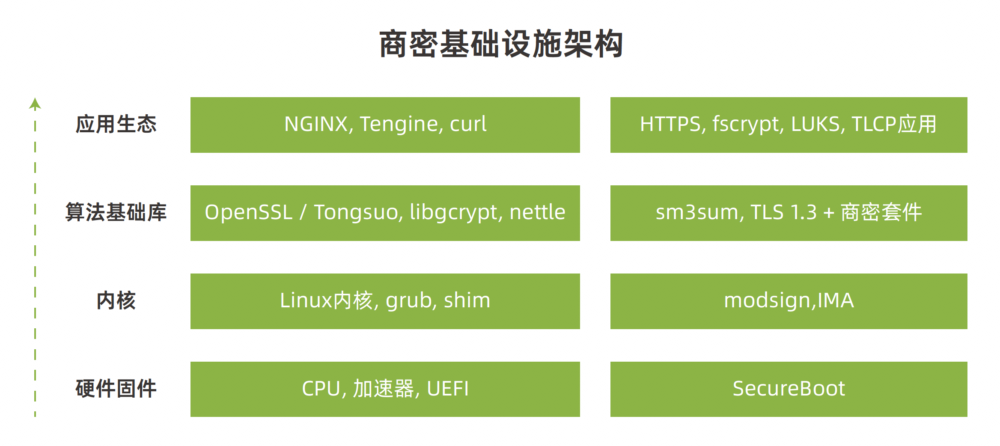
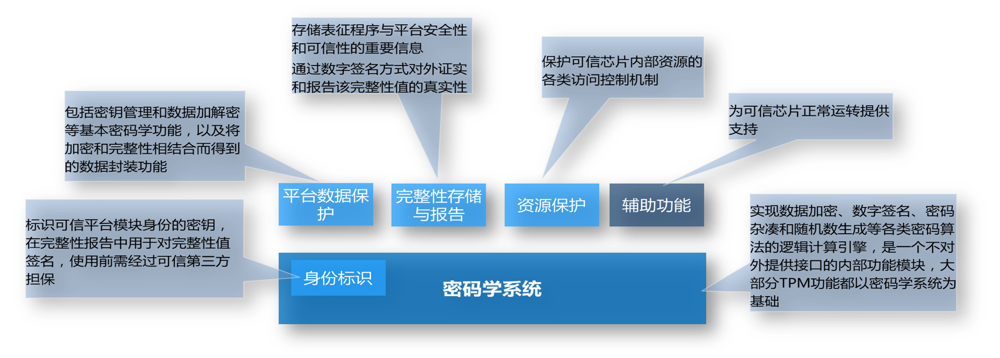
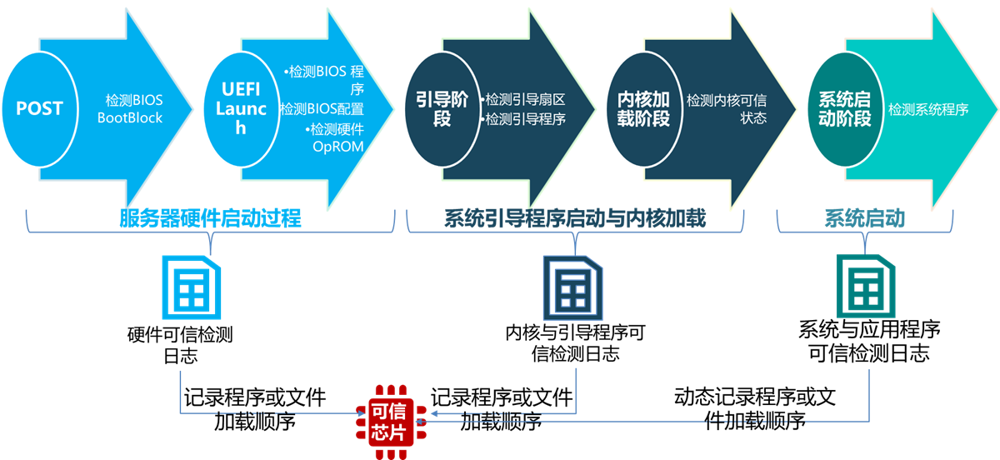
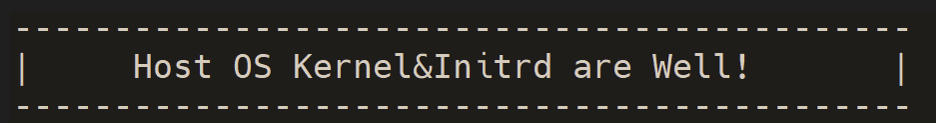
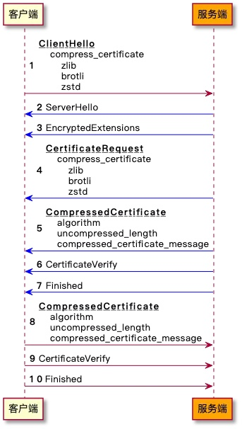
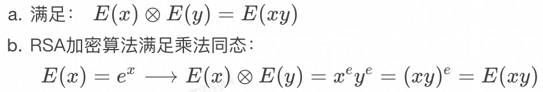
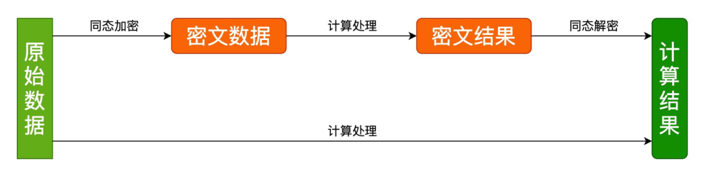
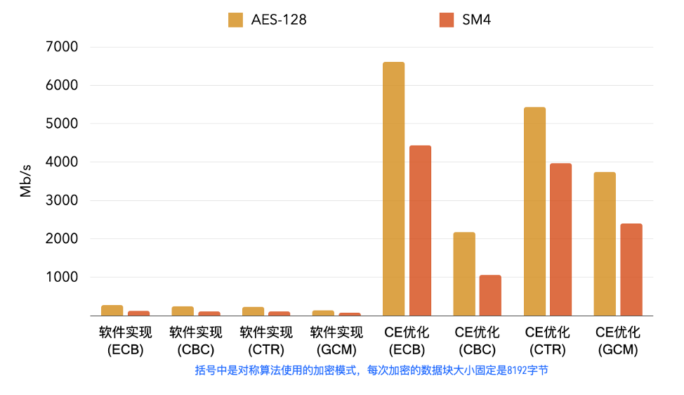

🟢 This document is MulanPSL v2 licensed.
前言
密码是保障网络空间安全的根本性核心技术，国产密码在各层次的充分融合应用成为基础软硬件体系化安全的核心支撑。随着近年来国际贸易冲突和技术封锁愈演愈烈，同时伴随着国内《密码法》、《网络安全法》、《数据安全法》等法律法规的颁布与实施，持续拉动着密码应用的新需求，也为商密在基础软硬件领域充分发挥安全核心技术支撑提出了更迫切的要求。
本文档旨在为龙蜥社区用户在商密开发、优化及融合应用上提供全面的解决方案最佳参考实践。
🟢 This document is MulanPSL v2 licensed.
🟢 认识龙蜥
龙蜥社区（ OpenAnolis ）成立于 2020 年 9 月，由阿里云、ARM、统信软件、龙芯、飞腾、中科方德、Intel 等 21 家国内外头部企业共同成立龙蜥社区理事会，到目前有超过 280 家合作伙伴参与共建，是国内领先的操作系统开源社区，具备较为领先的产业和技术影响力。目前，龙蜥操作系统下载量已超240万，整体装机量达500多万，100余款企业产品完成与龙蜥操作系统的适配。同时，统信软件、中科方德、中国移动云、麒麟软件、中标软件、凝思软件、浪潮信息、新支点、阿里云基于龙蜥开源操作系统推出各自商业版本及产品，在政务、金融、交通、通信等领域累计服务用户超过30万。
🟢 龙蜥开源影响力
龙蜥社区及龙蜥操作系统也获得了一定的行业认可，工信部电子标准院首批开源项目成熟度评估，成为唯一获得“卓越级”认证的开源项目、龙蜥操作系统&龙蜥社区双双荣登2021“科创中国”开源创新榜、荣获“中国开源云联盟年度优秀开源项目奖”、“OSCAR 开源尖峰案例奖”等 17 项行业奖项。
🟢 龙蜥项目运作模式
龙蜥社区已成立 50+ 个 SIG 工作组，围绕芯片、内核、编译器、安全、虚拟化及云原生等操作系统核心领域进行技术创新，已发布龙蜥 Anolis OS 7、Anolis OS 8.x 系列、Anolis OS 23 预览版、Lifsea OS 等多个社区版本，为应对 CentOS 停服，官网已上线「CentOS 停服专区」为用户提供迁移方案及长期稳定支持，致力于成为 CentOS 的最佳替代。
🟢 龙蜥运营管理
“为更好地运营和治理社区，龙蜥社区定期召开月度运营委员会会议、技术委员会会议，理事大会。
关于理事大会：龙蜥社区第二届理事大会圆满召开！理事换届选举、4 位特约顾问加入
关于运营委员会会议：龙蜥社区第11次运营委员会会议顺利召开
欢迎更多企业加入共建， 龙腾计划可参看：“龙腾计划”启动！邀请 500 家企业加入，与龙蜥社区一起拥抱无限生态。”
🟢 龙蜥开放的生态
为了鼓励合作伙伴在社区探索出更多的商业合作方式，真正牵引企业在龙蜥社区的合作落地，社区推出「龙腾计划」的升级版——「生态发展计划」，更聚焦在产品和商业合作本身。
详情可参看：https://openanolis.cn/page/partner2
关于龙蜥操作系统 （ Anolis OS ）
龙蜥操作系统（Anolis OS）搭载了 RHCK 和 ANCK 两种不同版本的内核，性能和稳定性经过历年“双 11”历练，能为云上典型用户场景带来 40% 的综合性能提升，故障率降低 50%，兼容 CentOS 生态，提供平滑的 CentOS 迁移方案，并提供全栈国密能力。最新的长期支持版本 Anolis OS 8.6 已发布，更多龙蜥自研，支持 X86_64 、RISC-V、Arm64、LoongArch 架构，完善适配 Intel、飞腾、海光、兆芯、鲲鹏、龙芯等主流芯片。
下载体验链接：https://openanolis.cn/download
2021 年 12 月 31 日，龙蜥开源社区（OpenAnolis）上线「CentOS 停服专区」，为受 CentOS 停服影响的用户提供迁移方案及长期稳定支持。此次停服，龙蜥操作系统（Anolis OS）产品优势包括：打造系统化解决方案 AOMS、提供多款配套工具、承诺10年技术支持、兼容 CentOS 生态、具备差异化核心技术优势、历经丰富场景验证、沉淀用户迁移案例实践。
反馈与共创
OpenAnolis是一个开放包容的社区，因此我们也欢迎志同道合之士参与我们的文档修订。
对于文档中您认为不足之处，欢迎到我们的官方仓库 Whitebook ShangMi 新开issue，我们会第一时间进行响应。
另外，若您想更新文档，也同样欢迎在 Whitebook ShangMi 提PR。
国密简介与现状
人类社会出现后就出现了信息交流，也就有了保护信息不被第三方获知的需求。密码由来已久，其发展经历了古典密码、机械密码、现代密码三个阶段。在这一过程中，密码技术在保密与破译、窃密与反窃密的激烈博弈中不断演变，理论发展最终使得密码学成为科学，当前，广泛多样性的应用需求和日趋激烈的攻防对抗，正在推动密码技术快速发展。
随着全球数字经济发展，网络空间必将成为战略威慑和控制的新领域、维护经济社会稳定的新阵地以及未来各国军事角逐的新战场，网络安全被纳入国家安全重要战略地位。密码作为保障网络安全的核心技术，是构建网络信任的基础支撑。我们利用密码的安全认证、加密保护、信任传递等特性，来消除或控制潜在的安全危机。
商用密码正是诞生于这样的背景之下的现代密码，商用密码是对不涉及国家秘密内容的信息进行加密保护或者安全认证，所使用的密码技术和密码产品。口语中一般也称呼商用密码为国密。商用密码算法标准由国家密码管理局制定，与此同时国密密码管理局也制定了大量的产品、接口规范以及应用场景，用于保障金融，医疗等领域的信息传输安全。
商用密码是密码技术的重要组成部分，在维护国家安全和主权、促进经济发展、保护人民群众利益中发挥着不可替代的重要作用。密码算法是最基础、最重要的密码技术。国家密码管理局高度重视密码算法管理工作。党的十八大以来，商用密码实现了跨越式发展。在科技和产业发展方面，密码科技创新能力不断增强，形成了较完善的标准体系，祖冲之（ZUC）、SM2、SM3、SM4 和 SM9 等我国商用密码算法已成为我国密码行业和国家标准，并被纳入 ISO/IEC 国际标准正式发布。
SM1 和 SM7 算法没有公开，仅以 IP 核的形式存在于芯片中，需要通过加密芯片的接口进行调用。
密码算法是保障信息安全的核心技术，尤其是最关键的银行业核心领域长期以来都是沿用3DES、SHA-1、RSA等国际通用的密码算法体系及相关标准。
随着近年来外部的国际贸易冲突和技术封锁，内部互联网的快速发展，IOT领域的崛起，以及金融领域的变革愈演愈烈。摆脱对国外技术和产品的过度依赖，建设行业网络安全环境，增强我国行业信息系统的安全可信显得尤为必要和迫切。
国家商用密码算法与标准体系
2010年底，国家密码管理局公布了我国自主研制的“椭圆曲线公钥密码算法”（SM2算法）。为保障重要经济系统密码应用安全，国家密码管理局于2011年发布了《关于做好公钥密码算法升级工作的通知》，明确要求“自2011年3月1日起，在建和拟建公钥密码基础设施电子认证系统和密钥管理系统应使用国密算法。自2011年7月1日起，投入运行并使用公钥密码的信息系统，应使用SM2算法。”
自2012年以来，国家密码管理局以《中华人民共和国密码行业标准》的方式，陆续公布了SM2/SM3/SM4等密码算法标准及其应用规范。其中“SM”代表“商密”，即用于商用的、不涉及国家秘密的密码技术。
我国高度重视商用密码国际标准化工作，大力推进以我国自主设计研制的SM系列密码算法为代表的中国商用密码标准纳入国际标准，积极参与国际标准化活动，加强国际交流合作。
2011年9月，我国设计的祖冲之(ZUC)算法纳入国际第三代合作伙伴计划组织(3GPP)的4G移动通信标准，用于移动通信系统空中传输信道的信息加密和完整性保护，这是我国密码算法首次成为国际标准。
2015年5月起，我国陆续向ISO提出了将SM2、SM3、SM4和SM9算法纳入国际标准的提案。
2017年，SM2和SM9算法正式成为ISO/IEC国际标准。
2018年，SM3算法正式成为ISO/IEC国际标准。
2020年4月， ZUC序列密码算法正式成为ISO/IEC国际标准。
2021年2月，SM9算法正式成为ISO/IEC国际标准。
2021年6月，SM4算法正式成为ISO/IEC国际标准。
我国商用密码国际标准体系已初步成型，为密码在全球范围的发展与应用提供了中国方案，贡献了中国智慧。
在转化运用国际标准方面，商用密码行业标准GM/T0028《密码模块安全技术要求》和GM/T0039《密码模块安全检测要求》，分别参考国际标准ISO19790和ISO24759编制，为规范商用密码产品管理、提升商用密码产品安全防护能力发挥了重要作用，充分体现了商用密码标准制定的开放性。
密码算法
SM2 基于椭圆曲线的公钥密码算法
SM2 基于椭圆曲线密码（ECC）的公钥密码算法标准，提供数字签名，密钥交换，公钥加密，可用于替换RSA/ECDSA/ECDH等国际算法。
该算法是基于椭圆曲线上离散对数计算问题，由于基于椭圆曲线上离散对数问题的困难性要高于一般乘法群上的离散对数问题的困难性，且椭圆曲线所基于的域的运算要远小于传统离散对数的运算位数。因此，椭圆曲线密码体制比原有的RSA密码体制更具优越性。
SM2 算法密钥长度为256比特，具有密钥长度短、安全性高等特点。SM2算法中的公钥加密算法可应用于数据加/解密和密钥协商等。SM2算法中的数字签名算法已在我国电子认证领域广泛应用。
SM3 消息摘要算法
SM3是消息摘要算法，哈希结果为固定的256 bits，可用于替换MD5/SHA1/SHA256等国际算法。
该算法采用M-D结构，输入消息经过填充、扩展、迭代压缩后，生成长度为256比特的杂凑值。SM3算法的实现过程主要包括填充分组和迭代压缩等步骤。SM3算法在结构上和SHA-256相似，消息分组大小、迭代轮数、输出长度均与SHA-256相同。但相比于SHA-256，SM3算法增加了多种新的设计技术，从而在安全性和效率上具有优势。在保障安全性的前提下，SM3算法的综合性能指标与SHA-256在同等条件下相当。
SM4 分组密码算法
SM4算法是我国颁布的商用密码标准算法中的分组密码算法。为配合无线局域网标准的推广应用，SM4算法于2006年公开发布，并于2012年3月发布密码行业标准，2016年8月转化为国家标准。SM4算法是一个迭代的分组密码算法，数据分组长度为128比特，密钥长度为128比特，加密算法与密钥扩展算法都采用32轮非线性迭代结构(非平衡Feistel结构)，明文分组经过迭代加密函数变换后的输出，又成为下一轮迭代加密函数的输入，如此迭代32轮，最终得到密文分组。每一轮迭代的函数相同，输入的轮密钥不同。Feistel结构的特点是加密和解密的算法结构一样。
SM9 公钥密码算法
SM9算法是一种基于双线性对的标识密码算法，它可以把用户的身份标识用以生成用户的公、私密钥对，主要用于数字签名、数据加密、密钥协商以及身份认证等。SM9标识密码算法的密钥长度是256比特，应用与管理不需要数字证书、证书库或密钥库。签名者持有一个标识和相应的私钥，该私钥由密钥生成中心通过主私钥和签名者的标识结合产生，签名者用自身的私钥对数据产生数字签名，验证者用签名者的标识生成其公钥，验证签名的可靠性，即验证发送数据的完整性、来源的真实性和数据发送者身份。
ZUC 祖冲之算法
祖冲之序列密码算法是中国自主研究的流密码算法,是运用于移动通信4G网络中的国际标准密码算法,该算法包括祖冲之算法(ZUC)、加密算法(128-EEA3)和完整性算法(128-EIA3)三个部分。
法律法规
《中华人民共和国密码法》
2019年10月26日，十三届全国人大常委会第十四次会议通过《中华人民共和国密码法》，于2020年1月1日起正式施行。出台密码法是几代密码人的梦想，是密码事业发展的现实需要，是密码工作历史上具有里程碑意义的重大事件。密码法的颁布和实施，是构建国家安全法律制度体系的重要举措，是维护国家网络空间主权安全的重要举措，是推动密码事业高质量发展的重要举措，是密码守好党和国家“命门”、“命脉”的重要法律保障。
随着《密码法》的颁布实施，我国商用密码在新的历史起点上，必将迎来更加广阔的发展空间。
《商用密码管理条例》
《国家商用密码管理条例》于1999年10月由国务院颁布，共七章27条，是为了加强商用密码管理，保护信息安全，保护公民和组织的合法权益，维护国家的安全和利益，所制定的条例。
《网络安全等级保护基本要求》
《信息安全技术—网络安全等级保护基本要求》（GB/T 22239-2019）是2019年12月1日实施的一项中国国家标准，归口于全国信息安全标准化技术委员会。
该要求规定了网络安全等级保护的第一级到第四级等级保护对象的安全通用要求和安全扩展要求。安全要求细分为技术要求和管理要求。其中技术要求部分为“安全物理环境”、“安全通信网络”、“安全区域边界”、“安全计算环境”、“安全管理中心”；管理要求部分为“安全管理制度”、“安全管理机构”、“安全管理人员”、“安全建设管理”、“安全运维管理”，两者合计共分为10大类。
安全技术要求的分类体现了“从外部到内部”的纵深防御思想，对等级保护对象的安全防护应考虑从通信网络、区域边界和计算环境从外到内的整体防护，同时考虑其所处的物理环境的安全防护，对级别较高的还需要考虑对分布在整个系统中的安全功能或安全组件的集中技术管理手段。
安全管理要求的分类体现了“从要素到活动”的综合管理思想，安全管理需要的“机构”、“制度”和“人员”三要素缺一不可，同时应对系统的建设整改过程和运行维护过程中重要活动实施控制和管理，对级别较高的需要构建完备的安全管理体系。
该标准适用于指导分等级的非涉密对象的安全建设和监督管理。
OpenAnolis 全栈国密概述
商密软件栈 SIG
从商密算法标准公布到现在已有十多年时间，与 AES，SHA 等主流国际算法相比，目前商密在基础软件中的支持和优化仍然不完 善，甚至有较大的差距，商密算法的软硬件生态也处于碎片化状态，密码算法作为网络和数据安全的基石，应该且有必要在基础软 件中具备开箱即用的能力；另一方面，密码算法是保障信息和数据安全的核心技术，随着近年来外部的国际贸易冲突和技术封锁的 加深，内部互联网的快速发展，我们不能单一依赖国外的的技术标准和产品，增强我国行业信息系统的安全可信显得尤为必要和迫 切。商用密码算法给我们提供了一个新的选择，使得我们可以完全使用商密技术来构建网络和数据安全环境。
🟢 SIG 目标
建立以国密算法为主的操作系统基础软件，与社区深度合作，在固件，bootloader，内核，算法基础库以及语言运行时中支持国密 算法，依托 Anolis OS 发行版作为载体，构建起全栈国密生态及解决方案，致力于为行业提供基于国密的信息安全标准。
🟢 SIG 原则
依托基础软件上游社区，为已有的轮子支持商密算法，尽可能不重新造轮子。
🟢 SIG 愿景
让天下没有难用的国密。
全栈商密生态架构
商密软件栈 SIG 依托基础软件上游社区，秉承为已有轮子支持商密的原则，在全栈范围内的多个基础组件中实现了商密算法以及性能优 化，包括 Linux 内核，OpenSSL，libgcrypt，gnulib，nettle 等在内的基础组件，支持了商密算法以及大量的性能优化，并且得到 上游社区的支持进入主线，基本补齐了商密算法在基础软件中的一些短板，在兼容现有API的情况下，提供给普通开发者平滑的使用 体验。
此外，Anolis社区相关团队积极投入，支持在TLS v1.3协议中使用商密算法套件，目前这个技术已经被国际标准承认，并且以RFC8998标准发布，这意味着我们可以选择在TLS v1.3协议中使用完整的商密套件，这极大的扩充了商密的应用范围，为了应用这些技术标准，同时为商密标准量身打造了Tongsuo密码算法库，在兼容OpenSSL的基础上支持了商密的标准，为用户提供一个基于商密的应用开发及运行环境。

商密 SIG 现状
龙蜥社区在众多的常用基础软件中实现了商密的支持，极大的丰富了商密的软件生态，并且把这些技术全部回馈到了上游社区，以下是相关的基础软件对于商密算法的支持情况以及社区回馈统计：
| 开源软件 | SM2 | SM3 | SM4 | PKCS#7 | X509 | commits | 修改行数 |
|---|---|---|---|---|---|---|---|
| gnulib | - | ✅ | - | - | - | 5 | -5/+1046 |
| libgcrypt | ✅ | ✅ | ✅ | - | - | 22 | -155/+4202 |
| linux | ✅ | Y | Y | ✅ | ✅ | 68 | -1536/+15478 |
| RustCrypto | ❌ | ✅ | Y | - | - | 1 | -0/+851 |
| ima-evm-utils | ✅ | ✅ | - | - | - | 5 | -13/+97 |
| ltp | ❌ | ✅ | ✅ | - | - | 2 | -7/+30 |
| libkcapi | - | ✅ | ✅ | - | - | 2 | -3/+287 |
| nettle | ❌ | ✅ | ✅ | - | - | 11 | -11/+1241 |
| OpenSSL | Y | Y | ✅ | Y | Y | 14 | -81/+471 |
当前商密软件栈的纵向指令集优化情况及性能提升统计：
| 优化项目 | libgcrypt | linux | OpenSSL | 性能提升 |
|---|---|---|---|---|
| SM3 | ||||
| 🔸 x86-avx/bmi2 | Y | ✅ | 36 % | |
| 🔸 armv7-neon | ||||
| 🔸 armv8-neon-aarch64 | Y | 34 % | ||
| 🔸 armv8-ce | ✅ | Y | Y | 55 % |
| 🔸 armv9-sve2 | ||||
| SM4 | ||||
| 🔸 x86-aesni-avx | Y | ✅ | WIP | 465 % |
| 🔸 x86-aesni-avx2 | Y | ✅ | 793 % | |
| 🔸 x86-gfni-avx2 | Y | |||
| 🔸 x86-gfni-avx512 | Y | |||
| 🔸 armv7-neon | ||||
| 🔸 armv8-neon-aarch64 | ✅ | ✅ | Y | 260 % |
| 🔸 armv8-ce | ✅ | ✅ | Y | 4050 % |
| 🔸 armv9-sve2-ce | ✅ | - |
- 性能提升数据是相比于纯软件实现的数据
- x86 架构的测试环境是
Intel i5-6200U 2.30 GHz - arm 架构的测试环境是
T-Head Yitian-710 2.75 GHz - ✅ 表示由OpenAnolis开发并已经贡献到开源软件中的特性
- “WIP”表示由OpenAnolis开发中的、或是开源软件正在进行review的特性
- “Y”表示开源软件已经支持且不是由OpenAnolis开发的
- ❌ 表示开源软件尚未支持
- “-”表示开源软件无需支持
应用场景
在以下的场景中，通过在各基础软件中支持的商密实现，可以平滑的从国际主流算法切换到商密算法上来，在提供高安全性的同 时，也有效避免了国外技术封锁带来的风险
- LUKS 磁盘加密支持使用 SM4 商密算法；
- fscrypt 支持使用 SM4 算法，以及 SM4-XTS，SM4-CBC 模式优化加速；
- TLS 1.3 支持使用商密算法套件（TLS_SM4_GCM_SM3）；
- IMA，modsign 支持使用 SM2/SM3 算法组合的签名验签，涉及 Linux 内核，sign-file 工具和 ima-evm-utils 的支持。
加入商密软件栈 SIG
以下是我们在OpenAnolis上的全栈国密SIG，非常欢迎有兴趣的开发能参与到社区中来，为中国的基础软件安全添砖加瓦。
🔗 SIG地址：https://openanolis.cn/sig/crypto
欢迎加入钉钉交流群，与社区用户和开发者实时交流：
Anolis OS 国密开发指南
龙蜥社区一直致力于在操作系统中集成国密的全部能力，以开箱即用作为目标，让用户可以如丝般顺滑的从国际算法切换到国密算法的生态上，为此，龙蜥社区在诸多的基础软件中做了很多的兼容和优化工作。Linux 内核和 OpenSSL 作为其中最重要的项目做了全面的国密适配，本章重点介绍龙蜥社区在 OpenSSL 适配国密上的进展以及用户使用指南。
OpenSSL 1.1 内置完整国密能力
众所周知，OpenSSL 是操作系统中最基础的密码学工具库，几乎被默认集成到所有基于Linux和BSD的发行版中，为操作系统提供最基本的基于密码学的信息安全能力。
OpenSSL整个软件包大概可以分成三个主要的功能部分：密码算法库，SSL/TLS协议库以及应用程序。作为一个基于密码学的安全开发包，OpenSSL提供的功能相当强大和全面，囊括了主要的密码算法、常用的密钥和证书封装管理功能以及 SSL/TLS 协议，并提供了丰富的应用程序供测试或其它目的使用。
🟢 挑战
OpenSSL 3.0 是OpenSSL社区的最新版本,于2020年4月发布，到目前为止已经发布了几个稳定版本，得益于社区开发者的持续贡献，这个版本已经支持了完整的国密能力，包括SM2、SM3、SM4算法以及使用这些算法的密钥和证书体系，甚至是SM3、SM4算法的优化也有了部分架构的支持。
相较于基础软件较长的升级迭代周期来说，OpenSSL 3.0 仍然是一个很新的版本，一个主要原因是OpenSSL 3.0 发布时间还较短，其次OpenSSL 3.0 在软件架构上做了较大的变动，部分原来被广泛使用的函数被标记为了过时函数，对于算法的使用方式也有了新的规则，各发行版出于稳定性和兼容性的考虑，目前系统默认内置的依然是 1.1.1 版本。用户若是想体验 OpenSSL 3.0 的功能需要使用第三方仓库或者是下载源码自行编译。
Anolis OS 23 系列的发行版已率先集成 OpenSSL 3.0 作为默认的密码学库，并提供与社区版本一致的体验，用户可以参考 OpenSSL 社区手册使用完整的国密能力。
🟢 Anolis 8.8 内置国密
但目前主流的 Anolis OS 8.x 系列，默认预装的还是 OpenSSL 1.1.1，一直以来，OpenSSL 1.1.1 都是国密的一个遗憾，也是一个痛点，这个版本的 SM2 签名验签能力是有缺陷的，也不支持国密标准的可辨别标识，但这个版本又是主流的发行版所使用的版本，甚至在某些发行版中，比如CentOS中，SM3和SM4算法都是被删掉的。鉴于以上原因，在 Anolis OS 8.8 中，在保证兼容性和稳定性的前提下，龙蜥社区在系统默认集成的OpenSSL 1.1.1 版本上支持了完整的SM2签名和验签能力，并做了开源，发行版本rpm也默认开启了SM3和SM4算法，带给用户开箱即用的国密使用体验。
代码仓库：https://github.com/openanolis/openssl/tree/anolis_sm234
Anolis OS RPM：https://gitee.com/src-anolis-os/openssl/tree/a8
🟢 用户手册
根据规范 GM/T 0003.2-2012 和 GM/T 0003.5-2012 的定义，SM2 算法签名时需要一个计算了 Za 的哈希值，这个Za是通过固定的椭圆曲线参数、公钥数据以及一个用户输入的可辨别ID生成的。因此，就必须在用户界面添加一个指定用户ID的参数才能支持完整的SM2签名和验签能力，在龙蜥社区的OpenSSL库中，通过特殊参数向OpenSSL内部传递该参数。
因此，龙蜥社区为签名工具扩展了sigopt参数，为验签工具添加了vfyopt参数来支撑用户界面的工具，SM2的可辨别标识通过distid子参数指定，比如可以使用-sigopt "distid:1234567812345678"在签名时指定SM2的可辨别标识值，终端用户可以通过命令行工具openssl来调用SM2的完整能力。
除此之外，其它完全兼容社区的OpenSSL 1.1.1，以下是使用这两个参数的具体例子，1234567812345678 是规范推荐使用的用户ID，用户可根据需要自行指定。
-
生成一个自签名的SM2根证书
# Generate a self signed root certificate openssl ecparam -genkey -name SM2 -text -out ca.key openssl req -verbose -new -days 10000 -x509 -sm3 \ -sigopt "distid:1234567812345678" \ -config genkey.conf -key ca.key -out ca.cert -
从证书生成SM2算法的证书请求并验证
# Generate a certificate request from private key and verify it openssl ecparam -genkey -name SM2 -text -out sm2.key openssl req -verbose -new -sm3 \ -sigopt "distid:1234567812345678" \ -config genkey.conf -key sm2.key -out sm2.csr openssl req -verbose -verify \ -vfyopt "distid:1234567812345678" \ -config genkey.conf -noout -text -in sm2.csr -
使用SM2算法签名证书请求并验证
# Sign a SM2 certificate request using the CA certificate and verify it openssl x509 -req -days 10000 -sm3 \ -sigopt "distid:1234567812345678" \ -vfyopt "distid:1234567812345678" \ -CA ca.cert -CAkey ca.key -CAcreateserial \ -extfile genkey.conf -extensions v3_ca \ -in sm2.csr -out sm2.cert openssl x509 -in sm2.cert -outform DER -out sm2.der openssl verify -verbose -show_chain \ -x509_strict -CAfile ca.cert sm2.cert
其中 genkey.conf的内容如下：
[ req ]
distinguished_name = req_distinguished_name
prompt = no
string_mask = utf8only
x509_extensions = v3_ca
[ req_distinguished_name ]
O = OpenAnolis-CA
CN = OpenAnolis certificate signing key
emailAddress = ca@openanolis-ca
[ v3_ca ]
basicConstraints=CA:TRUE
subjectKeyIdentifier=hash
authorityKeyIdentifier=keyid:always,issuer
[ skid ]
basicConstraints=CA:TRUE
subjectKeyIdentifier=12345678
authorityKeyIdentifier=keyid:always,issuer
🟢 开发指南
为了支持SM2的签名验签能力，龙蜥社区为 OpenSSL 内部的验签添加了三个新的API：
int ASN1_item_verify_ctx(const ASN1_ITEM *it, X509_ALGOR *a,
ASN1_BIT_STRING *signature, void *asn, EVP_PKEY *pkey,
EVP_MD_CTX *ctx);
int X509_verify_ctx(X509 *a, EVP_PKEY *r, EVP_MD_CTX *ctx);
int X509_REQ_verify_ctx(X509_REQ *a, EVP_PKEY *r, EVP_MD_CTX *ctx);
开发者通过他们可以调用完整的国密签名验签能力。这几个API扩展了原来不带 ctx 后缀的API能力，通过ctx可以预先指定额外的参数，这里主要是指SM2算法的用户可辨别标识，具体用法可参考apps目录里工具的调用方法或者sign系列的类似函数。
X509_sign 参考：https://www.openssl.org/docs/man1.1.1/man3/X509_sign_ctx.html
国密可信计算
TPM、TCM 与国密算法
可信平台模块始于2000年可信计算平台联盟（Trusted Computing Platform Alliance）制定的 TPM 1.0 规范. 2003 年, TCG(trusted computing group) 成立, 修改完成了 TPM 1.1 规范, 2004 年发布了 TPM 1.2, 2014 年发布了 TPM 2.0 规范.
鉴于可信计算技术对国家信息安全体系的重要性, 经国家密码管理局批准, 中国于2006年成立了可信计算密码专项组, 并于2008年12月更名为中国可信计算工作组(China TCM Union), 简称 TCMU. 2007年12月, 国家密码管理局颁布了《可信计算密码支撑平台功能与接口规范》, 将国内使用的可信基础模块定义为 TCM(trust cryptography module).相较于TPM, TCM采用了我国《商用密码管理条例》中规定的 SM2、SM3 等国密算法, 同时引入了对称密钥算法, 简化了TPM中复杂的密钥管理.TCM的证书认证机制采用签名密钥以及加密密钥的双证书机制, 将对称密钥与非对称密钥结合保护系统安全, 在密钥管理体系和基础密码服务体系等方面进行了改进, 提升了系统的安全性.TPM和TCM的构成和功能类似, 提供可信计算平台的信任根(RTS, RTR), 是由CPU、存储器、I/O、密码协处理器、随机数产生器和嵌入式操作系统等部件组成的独立 SoC 芯片, 具备可信度量的存储、可信度量的报告、密钥产生、加密和签名、数据安全存储等功能.
2015年 TPM 2.0 library specification（Trusted Platform Module）正式成为国际标准 ISO/IEC 11889，吸纳了 TCM 中相关的安全改进，并首次成体系支持中国密码算法体系，包括 SM2/SM3/SM4 密码算法。这是中国密码算法技术和标准的又一次重要突破，也是中国信息安全标准在国际标准化工作中的重要进展。ISO/IEC 11889 支持中国商用密码算法体系（SM2/SM3/SM4），使得在数据安全保护上更加牢不可破。
TPM 2.0
TPM (Trusted Platform Module) 2.0是遵循 ISO/IEC 11889 系列标准的可信根、由国际可信计算组织 TCG（Trusted Computing Group）维护。如下图所示，密码学系统是TPM2.0核心、其所有安全功能均以密码学系统为基础。

目前TPM2.0支持SM2.SM3、SM4特性，具体包括基于SM3的Hash算法、支持SM3 bank的PCR extend；支持SM4加解密；支持SM2加解密、SM2签名验签、SM2+SM3证书签名验签。
龙蜥OS为客户提供了两种使用TPM国密算法引擎的途径：TSS(TrustedSoftwareStack)提供的API访问TPM国密算法、TPMtools中的密码指令使用TPM提供的国密算法
以下示例为使用tpmtools创建基于SM2+SM3-256的认证密钥。
h_ek_persistent_ecc=0x81010002
tpm2_createak -C ${h_ek_persistent_ecc} -G ecc -g sm3_256 \
-s sm2 -c ak_ecc.ctx -u ak_ecc.pub -n ak_ecc.name -T device
UEFI 可信启动（Trusted Boot）
可信启动（TrustedBoot)是以可信根为核心、检测系统启动过程中所加载和使用的组件、确保预期的组件在预期的节点加载运行。

使用国密可信启动的条件如下：
- 硬件要具备的特性：
- 服务器或计算机固件（UEFI）支持基于国密的可信度量特性
- 服务器集成了TPM2.0芯片（该芯片许支持SM3、PCR SM3 Bank等特性
- OS 要具备的特性：
- 部署支持基于国密可信启动的引导程序（grub）
- 部署可信启动策略管理工具 (iTrustMidware)
- 说明：当以上组件可从Inspur KOS获取，Inspur KOS 基于龙蜥 OS 的商业发行版
1）BIOS国密可信度量Enable方法：需要将 SM3_256 PCR Bank 改为Enable

2）OS国密可信度量组件部署方法：
# grub2系列所有组件（如grub2、grbu2-common、grub2-efi-x64等）均需部署
rpm -ivh grub2-xxx.anolis.x86_64.rpm
rpm -ivh iTrustMidware-3.0.1-20220827200013.kos.x86_6.rpm
3）部署上述组件后、默认支持kernel、initramfs、grubcmdline的国密可信度量

4）如需添加对特定系统程序或配置文件的度量需要进一步配置策略
> tlcptool
1. Check Policy State.
2. Turn on Supervisory Policy.
3. Update Supervisory Policy.
4. Turn on Interception Policy.
5. Update Interception Policy.
6. Turn off Policy.
7. Export BootLoader Passphrase.
8. Deploy Measurement File.
9. Update Measurement File.
10. Delete Measurement File.
11. Export Software Trusted Report.
O.Exit.
Please Input the Corresponding Operations.
5）如需添加启动控制策略（在可信度量的基础上、基于国密进一步进行可信验证、需要配置可信启动控制策略。
6）度量结果查看：
直接在 /sys/kernel/security/tpm0/binary_bios_measurements 查看（以下是输出的部分片断）：
0 0d818d47f8b7... [S-CRTM Version]
0 b16790da86a8... [POST CODE]
7 c3e86209704b... [EV_EFI_VARIABLE_DRIVER_CONFIG] SecureBoot
... ...
8 c9eef8824efb... [IPL] grub_cmd set gfx_payload=keep
8 6a1007c86dc8... [IPL] grub_cmd insmod gzio
8 eb204c91fc3d... [IPL] grub_cmd linux (hd0,gpt2)/vmlinuz-4.18.0 root=/dev/sda2 ro
9 3e9ff31a4687... [IPL] grub_linuxefi Kernel
8 603cfbaa8375... [IPL] grub_cmd initrd (hd0,gpt2)/initramfs-4.18.0.img
9 f0ba7132ccea... [IPL] grub_linuxefi Initrd
其次使用iTrustMidware提供的策略管理工具也可以查看到详细的度量日志。
TPM 国密证书部署与远程证明
远程证明是可信计算中实现节点可信认证的关键设施，是实现可信节点之间可信互联的依据。KOS（Anolis 衍生发行版）在RSA+ SHA256+ AES和ECDSA+SHA256+AES的基础上拓展支持了基于TPM2.0国密的远程证明特性。
1）在KOS部署可信代理端之后、配置后可在可信管理端识别到响应的节点、之后通过可信管理端部署相应节点的国密远程认证证书（Attestation Certification)。

2）部署可信证书后、节点即可以远程证明的方式向可信管理端发送报告进行可信证明。

国密安全启动
UEFI安全启动简介
系统安全始于系统初始状态。在系统安全设计中，固件或作为系统安全根，或作为安全链路中的重要初始环节， 负责初始安全配置并将安全状态延伸至运行态操作系统。一旦启动固件发生恶意软件侵入，如BootKit, 将会动摇整个系统安全。
为保证启动固件安全，UEFI标准中定义了安全启动标准 - UEFI Secure Boot。其核心设计思想是部署合理的PKI证书作为安全策略，在启动中对所有需要执行的第三方固件模块进行密码学校验。

其实现细节如下:
-
使用公共CA服务提供签名证书，对UEFI可执行模块(包括设备驱动， 操作系统启动项，第三方工具等)进行数字签名。签名前需保证可执行模块符合安全标准。
-
制定系统启动UEFI安全启动策略并部署。包括可执行白名单、黑名单、验证证书强制失效时间，签名时间戳证书列表等。
-
系统启动中，强制使用UEFI安全启动策略对签名进行校验，通过则允许执行第三方固件模块，否则拒绝。
-
UEFI启动安全策略支持更新，且更新过程必须安全。在系统生命周期中，随着系统演进，环境变化，证书失效等需求变化，启动安全策略需要及时更新。更新需求可以来自平台的所有者，如执行新的硬件启动设备；也可能来自操作系统，如为了阻止某些带有安全缺陷的bootloader。新的安全策略同样带有签名，只有通过签名验证，且符合时效性，才能被目标系统接受。更新策略必须灵活，允许全部刷新，部分添加。
UEFI安全启动存在的问题
UEFI 安全启动从设计上补齐了系统启动的安全短板，能够解决固件启动中扩展执行第三方模块、OS启动项时的安全隐患；同时支持灵活的安全策略配置；能够从源头构建完整的安全链路。自UEFI2.3.1 正式引入功能以来，UEFI安全启动已然成为各类系统的标准安全配置，广泛应用于个人电脑，笔记本，HPC，云服务器，网络存储和路由等各种应用场景。尽管UEFI安全启动具备很多优良的特性，作为国外科技企业主导定义的安全标准，它在标准定义、实现和实际部署中，仍然存在诸多不可忽视问题:
-
UEFI安全启动设计标准限定了密码学算法的选用，如Hash算法仅支持SHA-2 256, 384, 512 等，数字签名校验算法仅支持EMSA-PKCS1-v1_5 。
-
仅支持RFC 标准PKCS7 Signed Data格式，不兼容国密算法定义的签名格式，。
-
PKI强依赖于外部营运的UEFI CA，无法自主控制第三方固件的恶意签发；无法自主控制国产操作系统升级迭代；固件安全漏洞响应时，无法及时生成更新的黑名单策略。
-
未能强化国密验证策略，例如白名单中所有证书处于相同等级，未支持国密证书强制验证或优先验证。当国密证书和其他CA证书共存时，UEFI安全启动可能无法构建一条完整的，基于国密验证的安全链条。
支持国密的UEFI安全启动
国密 BootLoader 支持和OS启动安全传递
-
shim：作为UEFI安全启动和Linux OS loader的桥梁，是系统控制权从固件转移至操作系统的关键环节。Shim一般自身携带有操作系统的专属证书。实际运行中，shim会注册MOK secure boot协议，用来替代UEFI secure boot签名认证。认证时使用自身携带的或MOK存储的证书来验证OS下一阶段启动模块。
-
grub2： Linux启动中，使用grub2管理内核加载和参数配置。为构建完整的安全验证链路， grub2 利用上述MOK secure boot协议来进一步验证Linux内核文件。
-
国密OS启动安全传递链路：

依赖与工具集（Dependencies）
根据上面的介绍，要部署完整的国密UEFI 安全启动，需要固件，操作系统，CA，三方硬件厂商和工具集的密切配合。
- 系统固件
- UEFI 固件：符合edk2固件开发规范，遵循芯片和平台安全开发手册, 完成从上电（G3->S0, S5->S0, S3->S0）或系统重置( Reset) 到运行态OS的系统初始化过程。UEFI固件必须具备支持国密SM2算法签名, 验证的能力，包括:
- 基于国密的固件安全更新，恢复机制
- 基于国密的UEFI安全启动验证
- 基于国密的UEFI安全启动策略更新
- 三方UEFI设备固件和工具: 同样遵循edk2固件开发规范，产生的可执行模块可携带多个不同证书签发的数字签名，且至少一个由国密CA证书签发。
- UEFI 固件：符合edk2固件开发规范，遵循芯片和平台安全开发手册, 完成从上电（G3->S0, S5->S0, S3->S0）或系统重置( Reset) 到运行态OS的系统初始化过程。UEFI固件必须具备支持国密SM2算法签名, 验证的能力，包括:
- 操作系统 Bootloader
- shim: 需能验签国密SM2算法标准中定义的类PKCS7#格式数字签名(signedData)。当前的shim版本已经支持
- grub2： 需能验签国密S国密SM2算法标准中定义的类PKCS7#格式数字签名(signedData)。当前的grub2版本已经支持。需要注意的是，grub2属于OS范畴,对内核国密签名的校验也由OS提供。
- 支持国密的CA服务
- 提供两组国密公共服务，1. CA证书签发，注销，，CRL管理；2. 国密签名 。国密CA服务不属于本白皮书讨论范畴。
- 工具集
- sbsigntools：签名工具，允许平台使用使用该工具对bootloader和内核进行签名。目前版本 0.9.3。
- mokutils：MOK secure boot密钥管理工具。mokutils的rpm在shim-signed中提供。
- efitools：UEFI secure boot密钥管理工具。目前版本 1.9.2。
安全启动策略更新验证体系
国密签名与验证
-
可执行文件国密签名格式
-
安全启动策略更新国密签名格式
-
更新 PK
-
更新 KEK
-
更新 DB ， DBX，DBT
-
更新 MOK 与 MOKX

注: 国密SM2签名规范没有强制要求Hash 算法，但实际应用中推荐使用SM3 Hash 算法。
-
Linux 内核国密支持
Linux 内核的算法往往是被开发者和用户忽略的一个基础算法库，Linux 内核结构复杂组件众多，随着部分用户态加解密机制下沉到内核，内核对加解密的需求还是非常丰富的，其次由于算法自身的无依赖，跨语言和跨平台的特点，内核有自身的一套完整的Crypto API 架构，并实现了非常丰富的算法，为内核中诸多的安全子系统提供支撑和服务。
Linux 内核Crypto API提供了以下的算法类型：
- 对称加密算法
- 带认证的 AEAD 算法
- 非对称密码算法
- 消息摘要，包括带密钥的消息摘要
- 随机数生成器
- 用户空间接口
内核Crypto API 提供单块密码和消息摘要的实现。 此外，内核加密 API 提供了许多可与单块密码和消息摘要结合使用的“模板”。 模板包括各类分组链接模式、HMAC机制等。
单块密码和消息摘要可以直接由调用者使用，也可以与模板一起调用以形成多块的分组密码或密钥消息摘要。
在具体的架构上，常用的算法是可以使用SIMD指令来优化，这一般会结合具体模式模板和单块密码，作为一个独立的算法注册到内核的 Crypto 子系统中，比如结合模式的 SM4-CTR 算法，在x86和arm64架构上，都是作为一个独立算法做过优化的，在其它架构平台上，可以选择使用 sm4 和 ctr 模板结合动态生成的ctr(sm4)算法。
通过/proc/crypto文件可以看到内核中所有支持的算法。
本小节内容会详细介绍内核中国密算法的支持情况以及结合内核国密的诸多应用场景。
内核国密算法
Linux 内核上游社区从 5.10 版本开始已经陆续支持了国密算法，到目前为止，x86和arm64架构上的国密的指令集优化也陆续得到内核的支持。
内核作为操作系统最重要的组件，对于国密的支持已经比较完善，就国密算法 SM3、 SM4 的优化来说，也仅仅略差于老牌的国际主流算法，在最近发布的 Linux 6.2 中，龙蜥社区对 arm64 架构的国密支持了众多的模式优化，成为 6.2 版本 Top 20 的活跃开发者：https://lwn.net/Articles/923410。
龙蜥社区 ANCK 5.10 内核已经全部支持了上游的这些国密和算法优化，通过 Anolis OS 提供给用户。
以下几张表格总结了目前内核已经实现的国密相关算法的一些具体情况，包括算法优先级（优先级越大性能越高，同一个算法内核会优先选择优先级高的实现），依赖指令（具体架构上依赖的CPU SIMD指令），内部驱动（可以认为是更详细的算法名称，可以通过这个名称引用该实现）。
类型字段是算法的类型，目前跟国密相关的几个类型如下：
- akcipher：非对称算法
- shash：哈希算法
- cipher：对称算法，只支持单个分组的加解密
- skcipher：对称算法，与模式相结合的算法
- aead：带认证的对称算法
软件实现
国密的软件实现是最早被引用内核的国密算法实现，软件实现不依赖任何特殊指令，适用于任何架构，但效率较低，在不支持优化的平台上可以选择使用软件实现的国密方案。
SM2 是非对称算法，目前在内核中主要用于验签和完整性检查，由于算法自身输入数据量小且调用频度不高，优化带来的收益不大，因此，Linux 内核中的SM2算法目前只有软件实现。
| 算法 | 类型 | 内部驱动 | 优先级 | 模块名 |
|---|---|---|---|---|
| SM2 | akcipher | sm2-generic | 100 | sm2-generic |
| SM3 | shash | sm3-generic | 100 | sm3-generic |
| SM4 | cipher | sm4-generic | 100 | sm4-generic |
x86 架构指令集优化
在x86架构上，主要是使用 AVX/AVX2 指令集对国密算法做的优化。
| 算法 | 类型 | 内部驱动 | 优先级 | 模块名 | 依赖指令 |
|---|---|---|---|---|---|
| SM3 | shash | sm3-avx | 300 | sm3-avx-x86_64 | avx/bmi2 |
| SM4-ECB | skcipher | ecb-sm4-aesni-avx | 400 | sm4-aesni-avx-x86_64 | avx/aesni |
| SM4-CBC | skcipher | cbc-sm4-aesni-avx | 400 | sm4-aesni-avx-x86_64 | avx/aesni |
| SM4-CFB | skcipher | cfb-sm4-aesni-avx | 400 | sm4-aesni-avx-x86_64 | avx/aesni |
| SM4-CTR | skcipher | ctr-sm4-aesni-avx | 400 | sm4-aesni-avx-x86_64 | avx/aesni |
| SM4-ECB | skcipher | ecb-sm4-aesni-avx2 | 500 | sm4-aesni-avx2-x86_64 | avx2/aesni |
| SM4-CBC | skcipher | cbc-sm4-aesni-avx2 | 500 | sm4-aesni-avx2-x86_64 | avx2/aesni |
| SM4-CFB | skcipher | cfb-sm4-aesni-avx2 | 500 | sm4-aesni-avx2-x86_64 | avx2/aesni |
| SM4-CTR | skcipher | ctr-sm4-aesni-avx2 | 500 | sm4-aesni-avx2-x86_64 | avx2/aesni |
🟢 性能数据
x86 上的性能数据来自Intel i5-6200U 2.30GHz环境，横坐标是输入的数据块大小（单位是字节），性能数据的单位是 Mbyte/s。
下表是 SM3 算法的性能数据，对比了纯软件实现和AVX优化的差异：
update-size | 16 64 256 1024 2048 4096 8192
------------+-------------------------------------------------------
sm3-generic | 105.97 129.60 182.12 189.62 188.06 193.66 194.88
sm3-avx | 119.87 163.05 244.44 260.92 257.60 264.87 265.88
下表是SM4算法的性能数据，分别是纯软件实现，AVX实现和AVX2实现的性能：
block-size | 16 64 128 256 1024 1420 4096
------------+------------------------------------------------------
sm4-generic
ECB enc | 60.94 70.41 72.27 73.02 73.87 73.58 73.59
ECB dec | 61.87 70.53 72.15 73.09 73.89 73.92 73.86
CBC enc | 56.71 66.31 68.05 69.84 70.02 70.12 70.24
CBC dec | 54.54 65.91 68.22 69.51 70.63 70.79 70.82
CFB enc | 57.21 67.24 69.10 70.25 70.73 70.52 71.42
CFB dec | 57.22 64.74 66.31 67.24 67.40 67.64 67.58
CTR enc | 59.47 68.64 69.91 71.02 71.86 71.61 71.95
CTR dec | 59.94 68.77 69.95 71.00 71.84 71.55 71.95
sm4-aesni-avx
ECB enc | 44.95 177.35 292.06 316.98 339.48 322.27 330.59
ECB dec | 45.28 178.66 292.31 317.52 339.59 322.52 331.16
CBC enc | 57.75 67.68 69.72 70.60 71.48 71.63 71.74
CBC dec | 44.32 176.83 284.32 307.24 328.61 312.61 325.82
CFB enc | 57.81 67.64 69.63 70.55 71.40 71.35 71.70
CFB dec | 43.14 167.78 282.03 307.20 328.35 318.24 325.95
CTR enc | 42.35 163.32 279.11 302.93 320.86 310.56 317.93
CTR dec | 42.39 162.81 278.49 302.37 321.11 310.33 318.37
sm4-aesni-avx2
ECB enc | 45.19 177.41 292.42 316.12 339.90 322.53 330.54
ECB dec | 44.83 178.90 291.45 317.31 339.85 322.55 331.07
CBC enc | 57.66 67.62 69.73 70.55 71.58 71.66 71.77
CBC dec | 44.34 176.86 286.10 501.68 559.58 483.87 527.46
CFB enc | 57.43 67.60 69.61 70.52 71.43 71.28 71.65
CFB dec | 43.12 167.75 268.09 499.33 558.35 490.36 524.73
CTR enc | 42.42 163.39 256.17 493.95 552.45 481.58 517.19
CTR dec | 42.49 163.11 256.36 493.34 552.62 481.49 516.83
arm64 架构指令集优化
arm64架构上的国密优化最完整，效果也最明显，比如SM4算法，除了x86架构上的四个模式外，还对 CTS/XTS 模式，AEAD模式 CCM/GCM 以及带密钥的哈希算法做了深度优化，这主要得益于armv8开始支持了SM3/SM4算法的Crypto Extensions扩展。
| 算法 | 类型 | 内部驱动 | 优先级 | 模块名 | 依赖指令 |
|---|---|---|---|---|---|
| SM3 | shash | sm3-neon | 200 | sm3-neon | NEON |
| SM3 | shash | sm3-ce | 400 | sm3-ce | CE-SM3 |
| SM4 | cipher | sm4-ce | 300 | sm4-ce-cipher | CE-SM4 |
| SM4-ECB | skcipher | ecb-sm4-neon | 200 | sm4-neon | NEON |
| SM4-CBC | skcipher | cbc-sm4-neon | 200 | sm4-neon | NEON |
| SM4-CFB | skcipher | cfb-sm4-neon | 200 | sm4-neon | NEON |
| SM4-CTR | skcipher | ctr-sm4-neon | 200 | sm4-neon | NEON |
| SM4-ECB | skcipher | ecb-sm4-ce | 400 | sm4-ce | CE-SM4 |
| SM4-CBC | skcipher | cbc-sm4-ce | 400 | sm4-ce | CE-SM4 |
| SM4-CFB | skcipher | cfb-sm4-ce | 400 | sm4-ce | CE-SM4 |
| SM4-CTR | skcipher | ctr-sm4-ce | 400 | sm4-ce | CE-SM4 |
| SM4-CTS | skcipher | cts-cbc-sm4-ce | 400 | sm4-ce | CE-SM4 |
| SM4-XTS | skcipher | xts-sm4-ce | 400 | sm4-ce | CE-SM4 |
| CMAC-SM4 | shash | cmac-sm4-ce | 400 | sm4-ce | CE-SM4 |
| XCBC-SM4 | shash | xcbc-sm4-ce | 400 | sm4-ce | CE-SM4 |
| CBCMAC-SM4 | shash | cbcmac-sm4-ce | 400 | sm4-ce | CE-SM4 |
| SM4-CCM | aead | ccm-sm4-ce | 400 | sm4-ce-ccm | CE-SM4 |
| SM4-GCM | aead | gcm-sm4-ce | 400 | sm4-ce-gcm | CE-SM4/PMULL |
🟢 性能数据
arm 上的性能数据来自T-Head Yitian-710 2.75 GHz环境，横坐标是输入的数据块大小（单位是字节），性能数据的单位是 Mbyte/s。
下表是 SM3 算法的性能数据，对比了纯软件实现，NEON优化实现和Crypto Extension优化实现的差异：
update-size | 16 64 256 1024 2048 4096 8192
---------------+--------------------------------------------------------
sm3-generic | 185.24 221.28 301.26 307.43 300.83 308.82 308.91
sm3-neon | 171.81 220.20 322.94 339.28 334.09 343.61 343.87
sm3-ce | 227.48 333.48 502.62 527.87 520.45 534.91 535.40
下表是SM4算法的性能数据，分别是纯软件实现，NEON优化实现和Crypto Extension优化实现的性能：
block-size | 16 64 128 256 1024 1420 4096
--------------+-------------------------------------------------------------
sm4-generic
ECB enc | 80.05 91.42 93.66 94.77 95.69 95.77 95.86
ECB dec | 79.98 91.41 93.64 94.76 95.66 95.77 95.85
CBC enc | 78.55 86.50 88.02 88.77 89.36 89.42 89.48
CBC dec | 76.82 89.06 91.52 92.77 93.75 93.83 93.96
CFB enc | 77.64 86.13 87.62 88.42 89.08 88.83 89.18
CFB dec | 77.57 88.34 90.36 91.45 92.34 92.00 92.44
CTR enc | 77.80 88.28 90.23 91.22 92.11 91.81 92.25
CTR dec | 77.83 88.22 90.22 91.22 92.04 91.82 92.28
sm4-neon
ECB enc | 28.31 112.77 203.03 209.89 215.49 202.11 210.59
ECB dec | 28.36 113.45 203.23 210.00 215.52 202.13 210.65
CBC enc | 79.32 87.02 88.51 89.28 89.85 89.89 89.97
CBC dec | 28.29 112.20 203.30 209.82 214.99 201.51 209.95
CFB enc | 79.59 87.16 88.54 89.30 89.83 89.62 89.92
CFB dec | 28.12 111.05 202.47 209.02 214.21 210.90 209.12
CTR enc | 28.04 108.81 200.62 206.65 211.78 208.78 206.74
CTR dec | 28.02 108.82 200.45 206.62 211.78 208.74 206.70
sm4-ce
ECB enc | 366.96 1329.81 2024.29 2755.50 3790.07 3861.91 4051.40
ECB dec | 367.30 1323.93 2018.72 2747.43 3787.39 3862.55 4052.62
CBC enc | 358.09 682.68 807.24 885.35 958.29 963.60 973.73
CBC dec | 366.51 1303.63 1978.64 2667.93 3624.53 3683.41 3856.08
CFB enc | 351.51 681.26 807.81 893.10 968.54 969.17 985.83
CFB dec | 354.98 1266.61 1929.63 2634.81 3614.23 3611.59 3841.68
CTR enc | 324.23 1121.25 1689.44 2256.70 2981.90 3007.79 3060.74
CTR dec | 324.18 1120.44 1694.31 2258.32 2982.01 3010.09 3060.99
CTS-CBC enc | 288.19 428.80 593.57 741.04 911.73 931.80 950.00
CTS-CBC dec | 292.22 468.99 838.23 1380.76 2741.17 3036.42 3409.62
XTS enc | 224.68 798.91 1248.08 1714.60 2413.73 2467.84 2612.62
XTS dec | 229.85 791.34 1237.79 1720.00 2413.30 2473.84 2611.95
下表是基于SM4算法的带认证哈希的Crypto Extension优化的性能数据：
update-size | 16 64 256 1024 2048 4096 8192
---------------+--------------------------------------------------------
cmac-sm4-ce | 371.99 675.28 903.56 971.65 980.57 990.40 991.04
xcbc-sm4-ce | 372.11 674.55 903.47 971.61 980.96 990.42 991.10
cbcmac-sm4-ce | 371.63 675.33 903.23 972.07 981.42 990.93 991.45
SM4 带认证的AEAD模式 CCM/GCM 在Crypto Extension优化后的性能数据：
block-size | 16 64 256 512 1024 1420 4096 8192
-----------+---------------------------------------------------------------------
CCM enc | 77.12 249.82 569.94 725.17 839.27 867.71 952.87 969.89
CCM dec | 75.90 247.26 566.29 722.12 836.90 865.95 951.74 968.57
GCM enc | 108.62 397.18 971.60 1283.92 1522.77 1513.39 1777.00 1806.96
GCM dec | 116.36 398.14 1004.27 1319.11 1624.21 1635.43 1932.54 1974.20
国密硬件加速与优化章节会重点介绍armv8下Crypto Extension的细节信息。
文件加密（fscrypt）
通常我们文件作为数据载体，使用磁盘，USB 闪存，SD 卡等存储介质进行数据存储，即便我们已经离线存储，仍然不能保证该存储介质不会丢失，如果丢失那么对于我们来说有可能是灾难性的事件。因此对这些离线存储的重要数据文件进行加密是非常有必要的，本节将介绍如何使用国密算法加密文件系统中的文件。
fscrypt 简介
内核中的 fscrypt 是一个库，文件系统可以挂钩它以支持文件和目录的透明加密。
与 dm-crypt 不同，fscrypt 在文件系统级别而不是块设备级别运行。 这允许它使用不同的密钥加密不同的文件，并在同一文件系统上拥有未加密的文件。 这对于多用户系统非常有用，在该系统中，每个用户的静态数据都需要与其他用户进行加密隔离。 除了文件名，fscrypt 不加密文件系统的元数据。
与作为堆栈文件系统的 eCryptfs 不同，fscrypt 直接集成到支持的文件系统中，目前是 ext4、F2FS 和 UBIFS。fscrypt 允许读取和写入加密文件，而无需在页面缓存中同时缓存解密和加密页面，从而将使用的内存几乎减半并使其与未加密文件保持一致。 同样，需要一半的 dentry 和 inode。 eCryptfs 还将加密文件名限制为 143 字节，从而导致应用程序兼容性问题； fscrypt 允许完整的 255 个字节 (NAME_MAX)长度的文件名。 最后，与 eCryptfs 不同，fscrypt API 可以由非特权用户使用，无需依赖任何组件。
fscrypt 不支持就地加密文件。 相反，它支持将空目录标记为已加密。 然后，在用户空间提供密钥后，在该目录树中创建的所有常规文件、目录和符号链接都将被透明地加密。
支持的加密模式和用法
fscrypt 允许为文件内容指定一种加密模式，为文件名指定一种加密模式。 不同的目录树允许使用不同的加密方式。 目前支持以下几种加密方式对：
- AES-256-XTS 算法用于加密内容，AES-256-CTS-CBC 算法用于加密文件名
- AES-128-CBC 算法用于加密内容，AES-128-CTS-CBC 算法用于加密文件名
- Adiantum 算法同时用于加密文件内容和文件名
- AES-256-XTS 算法用于加密内容，AES-256-HCTR2 算法用于加密文件名（仅限 v2 策略）
- SM4-XTS 算法用于加密内容，SM4-CTS-CBC 算法用于加密文件名（仅限 v2 策略）
AES-128-CBC 仅为具有不支持 XTS 模式的加速器的低功耗嵌入式设备使用。 要使用 AES-128-CBC，必须启用 CONFIG_CRYPTO_ESSIV 和 CONFIG_CRYPTO_SHA256（或其他 SHA-256 实现）以便使用 ESSIV。
Adiantum 是一种基于流密码的模式，即使在没有专用加密指令的 CPU 上也很快。 与 XTS 不同，它也是真正的宽块模式。 它还可以消除派生每个文件加密密钥的需要。 要使用 Adiantum，必须启用 CONFIG_CRYPTO_ADIANTUM。 此外，应启用 ChaCha 和 NHPoly1305 的快速实现，例如 ARM 架构上的 CONFIG_CRYPTO_CHACHA20_NEON 和 CONFIG_CRYPTO_NHPOLY1305_NEON。
AES-256-HCTR2 是另一种真正的宽块加密模式，旨在用于具有专用加密指令的 CPU。 AES-256-HCTR2 具有明文中的位翻转会更改整个密文的属性。 由于初始化向量在目录中重复使用，因此此属性使其成为文件名加密的理想选择。 要使用 AES-256-HCTR2，必须启用 CONFIG_CRYPTO_HCTR2。 此外，应启用 XCTR 和 POLYVAL 的快速实现，例如 用于 ARM64 的 CRYPTO_POLYVAL_ARM64_CE 和 CRYPTO_AES_ARM64_CE_BLK。
最后是 SM4 算法，目前仅在 fscrypt v2 策略中启用。
使用 SM4 算法加密文件
🟢 准备工作
fscrypt 依赖内核配置CONFIG_FS_ENCRYPTION=y，这里操作系统选择使用 ANCK 5.10 内核的 Anolis OS，其次，需要支持 fscrypt 特性的文件系统，这里以 ext4 为例，当然，F2FS 或者 UBIFS 也可以。
用户空间是通过 fscrypt API 跟内核完成交互的，对于用户来说，一般是通过fscryptctl或者fscrypt工具来下达加密策略。
本节内容以 fscryptctl（https://github.com/google/fscryptctl） 工具为例来演示，目前这是一个第三方工具，需要手工安装，按如下常规流程安装：
git clone https://github.com/google/fscryptctl.git
cd fscryptctl
make
make install
其次，选择一块未用到的磁盘格式化为支持 fscrypt 的文件系统 ext4，并挂载。
mkfs.ext4 -O encrypt /dev/vdb
mount /dev/vdb /mnt
🟢 透明加密文件
fscrypt 所用的加解密钥是关联在超级块上的，运行时是跟挂载点相关联的，添加删除密钥都是针对挂载点的操作，以下对密钥操作的命令都会带上挂载点。
按如下命令所示设置加密策略：
# 生成密钥文件，实际环境中应用使用更复杂的密钥
> echo '1234567812345678' > /tmp/keyfile
# 添加该密钥到文件系统，返回密钥ID，之后对密钥的操作都使用这个ID来索引
> fscryptctl add_key /mnt < /tmp/keyfile
23086a13ed81fd75ca5fe9b8f2ff25c7
# 查看密钥状态（不是必需）
> fscryptctl key_status 23086a13ed81fd75ca5fe9b8f2ff25c7 /mnt
Present (user_count=1, added_by_self)
# 创建加密目录 endir，并设置加密策略
# 使用之前添加的密钥和 SM4 算法来加密该目录中的文件和子目录
> mkdir /mnt/endir
> fscryptctl set_policy --contents=SM4-XTS \
--filenames=SM4-CTS 23086a13ed81fd75ca5fe9b8f2ff25c7 /mnt/endir
# 查看策略是否生效（不是必需）
> fscryptctl get_policy /mnt/endir
Encryption policy for /mnt/endir:
Policy version: 2
Master key identifier: 23086a13ed81fd75ca5fe9b8f2ff25c7
Contents encryption mode: SM4-XTS
Filenames encryption mode: SM4-CTS
Flags: PAD_32
此时，endir 已经是支持透明加解密的一个目录，可以像正常目录一样创建删除文件，在该目录下进行一些常规的文件操作，可以看到与普通目录没有区别：
> mkdir /mnt/endir/foo
> echo 'hello' > /mnt/endir/foo/hello
> cp -v /usr/include/curl/* endir
> tree /mnt/endir
/mnt/endir
├── curl.h
├── curlver.h
├── easy.h
├── foo
│ └── hello
├── header.h
├── mprintf.h
├── multi.h
├── options.h
├── stdcheaders.h
├── system.h
├── typecheck-gcc.h
├── urlapi.h
└── websockets.h
1 directories, 13 files
🟢 锁定加密目录
之所以能像普通目录一样操作，是因为密钥已经被添加到了文件系统中。接下来删除密钥后，就能看到目录被锁定，里面的所有路径和内容都是加密状态：
# 移除密钥
> fscryptctl remove_key 23086a13ed81fd75ca5fe9b8f2ff25c7 /mnt
> fscryptctl key_status 23086a13ed81fd75ca5fe9b8f2ff25c7 /mnt
Absent
# 处于加密状态的目录树
> tree /mnt/endir
/mnt/endir
├── 1H2e0BbS4MGZKAKEu6NVXniaYMWIrWDwbyzX6EVEWEN8tfWcWNgDyw
├── 2otRhm5-MDOSKyICcSyBWdKghJIsrsAl5xMCsCX0nCWQN2mC3gKBCg
├── 5MJXflC0Pf81ZlnV2YKmDg01tkRdKXPsmwZEesS-Q8gCLu-nuGRnSg
├── 5vPk9fvei-vU2RQp3tub8v3uZf_hOKje5kpGMn-qoTDkfhtU9C4Y5g
├── 7F6rs2Zf-ogIMXwQdOi0sKtT2vtq2d7XKOkXJ4PPfx1pAKNXDjYHkw
├── LvYw6Jl0a1jImKKOFPjtpG3hEDxjjuM6YIYqcMeXaWdzKUdaX0YCNQ
├── QBBz8_qGE4MJY6YVzfqVUkr6YeCSqtoQmbvG04BsR0lAr2oLwO0b2g
│ └── wOYdFlMRACjeBa-eSo3LuO4sE55q1YuFv-S_lVU-n498jdMjAt06JA
├── WBtjWd12dIHLd1XQ2fN_VnN8EGP1CrMJgqQLQ6Zt9No34mbNibCGSA
├── cHGhd03URFdNl19DExe26X6w2NsQC2ixUspPNdhU-1nrgKDDwPTMWg
├── eBGQnXyUMzPEOY3sHWVZNSeWKGm6C1NYCyEkO9Nm_dqNI15JAi6MzQ
├── mkzb9jZ5jk8A259-k8U34_4qi64SpJBKQOhwdTEIIiaHG7aLryMOGQ
├── tE1hArEQub5O88_prGmdVoj73W7eb-iqaQ4GEetgI8nEDyVIK4K08Q
└── zoiobWxVG2DLjg8uMXfsVP11159zqQUjozJ8gmt1zyjayJlZ4awOhA
1 directory, 13 files
# 目录被锁定，无法进行常规文件操作，即便拔盘，也不能得到明文内容
> cat /mnt/endir/1H2e0BbS4MGZKAKEu6NVXniaYMWIrWDwbyzX6EVEWEN8tfWcWNgDyw
cat: /mnt/endir/1H2e0BbS4MGZKAKEu6NVXniaYMWIrWDwbyzX6EVEWEN8tfWcWNgDyw: Required key not available
> mkdir /mnt/endir/hello
mkdir: cannot create directory ‘/mnt/endir/hello’: Required key not available
🟢 再次解锁加密目录
要解锁目录也很简单，重新添加密钥即可，文件系统会搜索到正确的密钥并解锁相应目录：
> fscryptctl add_key /mnt < /tmp/keyfile
23086a13ed81fd75ca5fe9b8f2ff25c7
# 添加密钥后文件内容可正常访问
> cat /mnt/endir/foo/hello
hello
后记
fscryptctl 是一个相对原生的工具，更接近内核，可以看到，该工具命令比较复杂，使用中需要记住很长一串密钥ID，用户体验并不好。
实际环境中，一般会使用 fscrypt 工具来完成加密策略操作，该工具由 Google 开发，用Go语言写成，通过在用户层面维护了一些元数据来简化用户操作，命令更易于理解，也更接近用户。
磁盘加密（LUKS）
类似于文件加密，磁盘加密很重要的一点也是为了解决因存储介质丢失而导致的敏感数据泄露问题。磁盘加密是以磁盘为加密对象来保护重要数据，磁盘之上的文件甚至文件系统对磁盘加密来说是透明的。
dm-crypt 和 LUKS 简介
dm-crypt是 Linux 内核提供的一个磁盘加密功能，负责对块设备进行加解密操作。dm-crypt 是 device-mapper 构架中用于块设备加密的一个模块。dm-crypt 通过 dm 框架虚拟一个块设备，并在BIO转发的时候将数据加密后存储来实现块设备的加密，而这些对于应用层是透明的。
🟢 dm-crypt 的特点
-
支持多种加密格式
目前 dm-crypt 支持如下几种加密模式：
- LUKS（Linux Unified Key Setup）：这是 dm-crypt 最常用的一种模式，本节也是以 LUKS 为主展开。
- Plain：Plain 模式使用单个无salt的哈希值逐个扇区进行加密。
- loop-AES：loop-AES 是一款比较陈旧的 Linux 磁盘加密工具。dm-crypt 提供了对它的支持。
- TCRYPT：在 cryptsetup 的 1.6.0 版本之后，开始提供对 TrueCrypt 加密盘的支持。
TCRYPT是TrueCrypt的缩写。在该模式下，可以打开 TrueCrypt 和 VeraCrypt 的加密盘，并对盘中的文件进行读写。
-
无需额外安装软件
由于 dm-crypt 早已被整合到 Linux Kernel 中。因此，无需额外安装它。至于它的命令行前端（cryptsetup），大部分主流的发行版都会内置 cryptsetup 的软件包。
-
可以跟 LVM 无缝整合
LVM（Logical Volume Manager）是 Linux 内核提供的另一个很有用的工具。比如用它来创建分区，将来可以随时调整分区大小；比如现有的硬盘空间用完了，可以另外加一块硬盘并且新加硬盘可以用来扩展现有分区。LVM 和 dm-crypt 都是基于 Linux 内核的 device mapper 机制。因此两者可以很好地整合。
🟢 cryptsetup
cryptsetup 是与 dm-crypt 交互的命令行工具，用于创建、访问和管理加密设备，主流的发行版已经内置了该工具。
从原理上来说，cryptsetup 其实是一种设备的映射关系，我们用它来把一个设备映射成另外一个设备，然后对这个新的设备进行操作，并进行加密，这样就不会使我们的原设备直接被使用，从而达到一种安全的效果。
🟢 LUKS
LUKS （Linux Unified Key Setup）是 Linux 硬盘加密的标准。 通过提供标准的磁盘格式，它不仅可以促进发行版之间的兼容性，还可以提供对多个用户密码的安全管理。 与现有解决方案相比，LUKS 将所有必要的设置信息存储在分区信息首部中，使用户能够无缝传输或迁移其数据。
使用 SM4 算法加密 LUKS 磁盘
⚠️ 选择一个不用的磁盘或者磁盘分区，该操作会清空设备上的所有数据，请谨慎操作。
这里选择使用 vda4 作为实验分区，使用 LUKS 格式格式化要加密的磁盘分区，加密算法是SM4 XTS：
# 根据提示输入大写的 YES 和密码完成格式化操作
> cryptsetup --cipher sm4-xts-plain64 --key-size=256 \
--hash sm3 luksFormat /dev/vda4
# 打开该加密分区，密码正确后，会创建代表该分区的透明设备 /dev/mapper/diskluks
# 该设备展示给用户的是一个未加密的普通的分区设备，可以对它进行任何针对分区的操作
> cryptsetup luksOpen /dev/vda4 diskluks
# 使用status子命令可以看到加密分区的状态信息
> cryptsetup status diskluks
/dev/mapper/diskluks is active.
type: LUKS2
cipher: sm4-xts-plain64
keysize: 256 bits
key location: keyring
device: /dev/vda4
sector size: 512
offset: 32768 sectors
size: 14645248 sectors
mode: read/write
# 此时，diskluks表现为一个普通分区，我们可以格式化为任意支持的文件系统，并挂载它
> mkfs.ext4 /dev/mapper/diskluks
> mount /dev/mapper/diskluks /mnt/
# 在磁盘树中可以观察到加密的设备和代表它的透明未加密设备diskluks
> lsblk -f
NAME FSTYPE FSVER LABEL UUID FSAVAIL FSUSE% MOUNTPOINTS
vda
├─vda1
├─vda2 ext4 1.0 rootfs e958d21c-63aa-46d7-a215-be264ccb02d5 23.2G 16% /
├─vda3 ext4 1.0 fscrypt 0463916b-cd52-40f3-9c95-290bf4839d8e
└─vda4 crypto_LUKS 2 b5338a30-6974-45f4-81da-98f1cb0cab72
└─diskluks ext4 1.0 683a0dc2-0755-4759-b94c-54687c706dd5 6.4G 0% /mnt
# 取消挂载
> umount /mnt
# 锁定加密分区，diskluks设备被删除，此时没有密码的用户看不到明文数据
> cryptsetup close diskluks
后记
SM4 的密钥长度是 128 位，因为 XTS 模式使用两个密钥，所以这里需要显式指定密钥长度是 256 位。
除了密码之外，还可以选择使用密钥文件解密硬盘，也就是相当于一个密钥，当然也可以只使用密钥文件或者同时使用密码与密钥文件，用户需要使用子命令 cryptsetup luksAddKey 和 cryptsetup luksRemoveKey 来管理密钥。
内核完整性度量架构（IMA）
IMA 简介
IMA是Integrity Measurement Architecture的缩写，它是Linux内核中完整性子系统的一部分。目前Linux内核的完整性子系统支持EVM和IMA，前者用于保护文件的扩展属性。这篇文章讨论的是后者。
IMA所能做到的事情包括：
- 能够对正在打开的文件进行完整性评估。
- 能够对正在执行exec的文件（可执行程序）进行完整性评估。
- 能够对正在执行mmap(PROT_EXEC)的文件（共享库）进行完整性评估。
- 能够对正在加载中的kernel模块和固件进行完整性评估。
所谓的完整性评估指的是对内核对文件客体在执行特定的内核操作时，会主动对文件的内容进行完整性检查。为此，IMA子系统会借用内核的security子系统在open(), execve(), mmap()等系统调用中下的hook来执行自己的代码。
IMA 原理
IMA在进行完整性验证时，会通过事先存储在文件系统中的文件扩展属性security.ima进行。具体来说，借用IMA签名工具evmctl，在系统部署的时候，管理员以特权用户身份将文件的完整性信息写入文件扩展属性security.ima中。
在系统运行时，IMA子系统会从该扩展属性中读取出文件的完整性信息，同时与实际计算出的完整性信息进行比较。如果结果一致，证明该文件没有遭到过篡改，则允许执行后续的操作；如果结果不一致，证明文件内容遭到了篡改，则后续操作禁止执行。
因此，即使攻击者通过密码破解拿到了本地特权，或者利用安全漏洞拿到了本地特权，但是在准备运行恶意程序或植入了后门的程序的时候，因为在没有IMA私钥的情况下是无法构造出合法的IMA签名的，因此导致恶意程序或被篡改了的程序均无法运行。即使带有IMA保护的存储设备受到离线攻击（比如把存储设备从主机上取下，拿到另一台机器上进行修改，然后再重新安装到主机上），被篡改的文件或攻击者植入的恶意软件在运行时依旧无法运行，这在一定程度上能够抑制类似Dirty Cow这样的内核漏洞所带来的危害。
IMA 商密化实践
所谓IMA商密化，就是在IMA整个签名验证流程中，使用商密算法SM3代替国际常用的哈希算法SHA256，SHA512等，用SM2算法的签名验签取代RSA算法。
本文中用到的主要是以下公开的商密算法：
- SM2：基于椭圆曲线密码（ECC）的公钥密码算法标准，提供数字签名，密钥交换，公钥加密，用于替换RSA/ECDSA/ECDH等国际算法
- SM3：消息摘要算法，哈希结果为256 bits，用于替换MD5/SHA1/SHA256等国际算法
首先，安装实践IMA必要的工具包：
yum install -y keyutils ima-evm-utils
🟢 生成商密密钥和证书
为了使用IMA功能，先要准备以下密钥和证书：
- CA根证书：为了便于实验，这里选择自签名的证书，作为信任根内置到内核里
- IMA私钥：与IMA证书对应的SM2私钥，用于签名文件
- IMA证书：由CA根证书签名，系统启动后动态导入内核
# 创建签名证书请求使用的配置文件genkey.conf
cat > genkey.conf << EOF
[ req ]
distinguished_name = req_distinguished_name
prompt = no
string_mask = utf8only
x509_extensions = v3_ca
[ req_distinguished_name ]
O = IMA-test
CN = IMA test key
emailAddress = ima@test.com
[ v3_ca ]
basicConstraints=critical,CA:FALSE
keyUsage=digitalSignature
subjectKeyIdentifier=hash
authorityKeyIdentifier=keyid:always
EOF
# 生成一个自签名的根证书ca.cert，作为CA证书
openssl ecparam -genkey -name SM2 -text -out ca.key
openssl req -verbose -new -days 10000 -x509 \
-sm3 -sigopt "distid:1234567812345678" \
-config genkey.conf -key ca.key -out ca.cert
# 生成SM2私钥sm2.key
openssl ecparam -genkey -name SM2 -text -out sm2.key
# 从私钥生成证书请求
openssl req -verbose -new \
-sm3 -sigopt "distid:1234567812345678" \
-config genkey.conf -key sm2.key -out sm2.csr
# 使用CA证书给SM2证书请求签名，生成IMA要使用的商密证书sm2.cert
openssl x509 -req -days 10000 -sm3 \
-sigopt "distid:1234567812345678" \
-vfyopt "distid:1234567812345678" \
-CA ca.cert -CAkey ca.key -CAcreateserial \
-extfile genkey.conf -extensions v3_ca \
-in sm2.csr -out sm2.cert
🟢 编译并安装新内核
为了测试和验证IMA特性，我们需要把CA根证书内置到内核，这需要使用新的CA根证书重新编译内核。
按如下步骤依次下载内核源代码，编译，安装内核后并重启系统：
# 下载Anolis OS的ANCK源代码，使用最新的5.10分支即可
git clone https://gitee.com/anolis/cloud-kernel.git -b devel-5.10
# 安装编译依赖
yum install -y bison flex elfutils-libelf-devel bc make gcc
# 用上一步生成好的ca.cert作为内核信任的根证书，使用默认配置编译内核
cp -f ca.cert <kernel_src>/certs/
# 进入内核源码目录，使用默认配置编译内核
cd <kernel_src>
# 如果您是arm的镜像，请将 arch/arm64/configs/anolis_defconfig 作为.config；
# 如果是x86的，请将 arch/x86/configs/anolis_defconfig 作为.config。以x86为例
cp -f arch/x86/configs/anolis_defconfig .config
# 配置系统的可信根证书
sed -i 's/CONFIG_SYSTEM_TRUSTED_KEYS=\"\"/CONFIG_SYSTEM_TRUSTED_KEYS=\"certs\/ca.cert\"/' .config
# 编译
make -j<nproc>
# 安装modules
make modules_install
# 安装内核，这一步也会自动生成initramfs并更新grub.cfg
make install
# 查看vmlinuz
ls -l /boot/vmlinuz*
# 将新内核设置为缺省的启动内核，这里根据实际情况自行调整
grubby --set-default /boot/vmlinuz-5.10.<minor version>
# 重启
reboot
重启机器后，通过/proc/keys或者keyctl可以看到我们的SM2根证书已经内置到了内核中：
# cat /proc/keys | grep sm2
02a32516 I------ 1 perm 1f030000 0 0 asymmetri: IMA-test: bc08a9e6e43c...: X509.sm2 3a089aca []
# keyctl show %:.secondary_trusted_keys
Keyring
371108982 ---lswrv 0 0 keyring: .secondary_trusted_keys
945861859 ---lswrv 0 0 \_ keyring: .builtin_trusted_keys
575535217 ---lswrv 0 0 \_ asymmetric: Build time autogenerated kernel key: 60d20efc1951...
44246294 ---lswrv 0 0 \_ asymmetric: IMA-test: bc08a9e6e43c...
🟢 导入IMA证书到内核
为了使用IMA功能，我们需要把前面用CA证书签名的IMA证书sm2.cert导入到内核，之后才能用该证书正确验签IMA私钥签名的文件，因为内核已经集成了CA根证书，也只有CA签名的证书才能成功导入内核。
内核只支持导入DER格式的证书，因此我们需要先将pem的证书转换为der格式，命令如下
# 内核只支持导入DER格式的证书
openssl x509 -in sm2.cert -outform der -out sm2.cert.der
用keyctl导入证书，注意系统重启后会失效
# 非持久性导入, 重启后失效
keyctl padd asymmetric "IMA" %:.ima < sm2.cert.der
IMA证书导入成功后，我们可以从/proc/keys看到证书信息
# IMA证书导入成功后，我们可以从/proc/keys看到证书信息：
cat /proc/keys | grep sm2
03cd0857 I------ 1 perm 1f030000 0 0 asymmetri: IMA-test: 10024aa19b7b...: X509.sm2 806f9ca2 []
069ced19 I--Q--- 1 perm 39010000 0 0 asymmetri IMA: X509.sm2 604c5d8c []
🟢 IMA签名
接下来给系统中需要IMA验证的文件加上SM2的签名，这里简单粗暴的给常用目录下文件全部签名，如果文件比较多的话，这个过程会持续几分钟。
# 使用SM3哈希算法，sm2.key是签名用的私钥，给系统主要目录下所有文件做IMA签名
for dir in bin sbin usr lib lib64 etc home; do
evmctl ima_sign -a sm3 -s -k /path/to/sm2.key -r -t f /$dir
done
# 通过getfattr可以查看添加到文件扩展属性中的签名数据（不是必需）
yum install -y attr
getfattr -n security.ima /path/to/file
🟢 导入IMA策略
IMA策略是使能IMA的必备步骤，策略的内容可以根据实际需要进行定制。为了方便说明问题，这里以用户imatest来测试，在下面的规则示例中，当以imatest身份运行可执行程序和共享库时，会进行IMA度量以及apprase检查。
# 创建用户imatest
useradd imatest
# 用户ID可以从/etc/passwd中看到，这里是1001，用户ID会在IMA规则中用到
tail /etc/passwd | grep imatest
# imatest:x:1001:1001::/home/imatest:/bin/bash
将下面的文件内容另存为ima.policy文件：
appraise appraise_type=imasig uid=1001 func=BPRM_CHECK
measure uid=1001 func=BPRM_CHECK
appraise appraise_type=imasig uid=1001 func=MMAP_CHECK
measure uid=1001 func=MMAP_CHECK
上面的规则表示：
- 度量以uid=1001身份运行的程序和共享库，并将度量值记录在/sys/kernel/security/ima/ascii_runtime_measurements文件中。
- 评估以uid=1001身份运行的程序和共享库，如果程序的完整性被破坏，程序将被拒绝运行。
然后写入IMA规则到内核：
cat ima.policy > /sys/kernel/security/ima/policy
🟢 IMA验证
IMA策略写入内核后，IMA特性就已经在内核生效了，此时可以以imatest用户身份执行一些操作
su imatest
... ...
通过ascii_runtime_measurements我们可以看到IMA运行时度量的信息，这些都是通过IMA验证的文件，以下是部分度量日志：
# cat /sys/kernel/security/ima/ascii_runtime_measurements
10 bcb0e518b79d... ima-sig sha1:00000000000... boot_aggregate
10 d20bcf8ea6f3... ima-sig sm3:66acf6555ad2... /usr/bin/bash
10 b829e4761f7a... ima-sig sm3:1bcd4a4cb2a2... /usr/lib64/ld-2.17.so
10 be220df2bc61... ima-sig sm3:66acf6555ad2... /usr/bin/bash
10 d262c29452b0... ima-sig sm3:1bcd4a4cb2a2... /usr/lib64/ld-2.17.so
10 26bf0fc75828... ima-sig sm3:18781f4c9104... /usr/lib64/libtinfo.so.5.9
... ...
注意期中第一条日志，boot_aggregate是系统启动阶段TPM PCR的汇聚值，这个值是汇聚TPM设备对应PCR bank的值做一个digest，所使用的摘要算法是根据TPM设备版本以及支持的PCR bank决定，默认是SHA1，当然这个摘要也可以通过配置为默认优先SM3算法，例子中没有TPM设备，所以这里值是0。
接下来，我们再构造一个没有经过签名的可执行文件并执行：
su imatest
cd ~
echo 'int main(){}' > dummy.c
gcc -o dummy dummy.c
运行dummy可执行文件，提示没有权限，这是符合预期的，同样，如果文件的签名是错误的，没有通过签名验证，是会被拒绝执行的。
# ./dummy
bash: ./dummy: Permission denied
# dmesg
audit: type=1800 audit(1631788187.296:8): pid=1426 uid=1001 auid=0 ses=4 op=appraise_data cause=IMA-signature-required comm="bash" name="/home/imatest/dummy" dev="vda2" ino=668226 res=0
我们看到，通过对这些软件栈的改造，可以平滑迁移到商密算法，并且完全基于商密算法构建出IMA的安全机制，而这些机制在以前都是完全且只能构建在国际标准的算法之上的。
内核模块签名
内核模块签名简介
Linux内核支持只加载认证了的内核模块，这是一个重要的安全机制，开启这个功能时，可以阻止来源不明和没有认证的内核模块加载到内核，用以保护系统的安全性，这个认证也是通过数字签名来保证的，不同于IMA的签名，Linux内核模块的签名是以特定的数据格式追加在文件结尾的，使用的算法通常是国际算法。
涉及到签名的场景就可以使用商密算法来替换掉国际算法，要使内核模块签名支持使用商密算法，也需对签名工具和内核本身做修改，签名工具和内核同时需要支持解析使用商密算法的PKCS#7数字签名。
内核模块签名国密实践
🟢 准备环境
开始之前，我们仍然需要准备与IMA类似的环境，生成商密密钥和证书，使用新生成的根证书编译安装内核。不过这次生成的密钥是用于签名内核模块，在内核ko模块文件签名时我们选择使用根证书ca.cert直接签名，因此可以不需要生成sm2.cert证书。
参考IMA章节的如下两小节准备ko模块签名的环境：
- 生成商密密钥和证书（可以不用生成sm2.cert）
- 编译并安装新内核
🟢 sign-file签名ko文件
接下来我们使用内核提供的sign-file工具，给一个内核模块ko文件加上商密签名，命令如下
<kernel_src>/scripts/sign-file sm3 ca.key ca.crt <file>.ko <file>.ko.signed
通过tail <file>.ko.signed 看到~Module signature appended~字样说明模块已经有了签名。
🟢 内核验证验名
内核会在加载模块时自动执行ko文件签名验证流程，当验证失败时，内核会根据配置来决定是拒绝加载还是发出告警信息，默认配置是验签失败时告警。
insmod和modprobe工具用于加载模块。/proc/modules文件中记录了已加载模块的状态，包括是否通过了签名验证的状态，这里关心以下两个标记：
- O: Out-of-tree module has been loaded
- E: Unsigned module has been loaded
如果你的模块签名正确，可以看到对应的模块没有E标记，以Out-of-tree的hello.ko为例，正确签名后是这样的：
# insmod hello.ko
# cat /proc/modules
hello 262144 0 - Live 0xffff000003520000 (O)
如果你的模块验签失败或者未签名，可以看到E标记， 比如：
# modprobe nft_fib_inet.ko
# cat /proc/modules
nft_fib_inet 262144 1 - Live 0xffff0000034a0000 (E)
这时候可以通过dmesg查看详细的错误原因，比如PKCS#7 signature not signed with a trusted key是指使用了错误的私钥来签名。
Kernel TLS（KTLS）实践
KTLS 简介
传输层安全协议（TLS）一般是在用户态库中实现，比如OpenSSL和gnutls库都实现了TLS协议，除了与内核的网络交互外，协议自身对内核是透明的。Kernel TLS（KTLS）从名字可以看到，是把TLS协议的数据平面（相对于处理协议的控制平面来说，也就是真正用于传输负载数据的部分）下沉到了内核中，发送数据时由内核加密后直接发送到网络设备，接收到数据后先解密再交给应用，呈现在用户态的仍然是明文。

🟢 优势
众所周知，sendfile在内核提供的重要的优化网络服务的手段，但完全实现在用户态的TLS库是不支持sendfile的，因为要把文件内容读入用户态，加密后再交给内核发送到网络设备。
在使用Kernel TLS 时，一定程度上是解决了在TLS中使用sendfile的问题，KTLS 是内核提供的又一个重要的优化TLS协议的手段。尤其是在静态文件服务的场景下，对TLS协议的性能提升明显，对基于TLS协议的https流量的性能提升非常有帮助，因为在内核加解密数据会减少数据在内核态和用户态的两次数据拷贝。
KTLS 国密实践
RFC 8998定义了在TLS 1.3协议中使用国密算法套件的规范，KTLS 也支持使用 SM4 CCM/GCM AEAD 算法加密数据。
内核的KTLS跟应用是通过sockopt来交互的，开发者需要明确告诉内核某个套接字要使用KTLS并且传递加密所需要的各种信息，比如密钥，记录序号等。
以下示例演示了在网络应用中使用 SM4 GCM 算法在内核加密数据。注意，内核KTLS依赖TLS协议握手之后得到的密钥数据，但不必实现完整的TLS协议，即便这个密钥不是TLS握手得到的。
🟢 准备套接字
创建新的TCP套接字，并通过 SOL_TCP 选项明确告诉内核使用KTLS：
sock = socket(AF_INET, SOCK_STREAM, 0);
setsockopt(sock, SOL_TCP, TCP_ULP, "tls", sizeof("tls"));
以下内容是在 linux/tls.h 头文件中与国密相关的定义，会在之后的代码片断中引用：
/* From linux/tls.h */
struct tls_crypto_info {
unsigned short version;
unsigned short cipher_type;
};
struct tls12_crypto_info_sm4_gcm {
struct tls_crypto_info info;
unsigned char iv[TLS_CIPHER_SM4_GCM_IV_SIZE];
unsigned char key[TLS_CIPHER_SM4_GCM_KEY_SIZE];
unsigned char salt[TLS_CIPHER_SM4_GCM_SALT_SIZE];
unsigned char rec_seq[TLS_CIPHER_SM4_GCM_REC_SEQ_SIZE];
};
struct tls12_crypto_info_sm4_ccm {
struct tls_crypto_info info;
unsigned char iv[TLS_CIPHER_SM4_CCM_IV_SIZE];
unsigned char key[TLS_CIPHER_SM4_CCM_KEY_SIZE];
unsigned char salt[TLS_CIPHER_SM4_CCM_SALT_SIZE];
unsigned char rec_seq[TLS_CIPHER_SM4_CCM_REC_SEQ_SIZE];
};
#define TLS_CIPHER_SM4_GCM 55
#define TLS_CIPHER_SM4_GCM_IV_SIZE 8
#define TLS_CIPHER_SM4_GCM_KEY_SIZE 16
#define TLS_CIPHER_SM4_GCM_SALT_SIZE 4
#define TLS_CIPHER_SM4_GCM_TAG_SIZE 16
#define TLS_CIPHER_SM4_GCM_REC_SEQ_SIZE 8
#define TLS_CIPHER_SM4_CCM 56
#define TLS_CIPHER_SM4_CCM_IV_SIZE 8
#define TLS_CIPHER_SM4_CCM_KEY_SIZE 16
#define TLS_CIPHER_SM4_CCM_SALT_SIZE 4
#define TLS_CIPHER_SM4_CCM_TAG_SIZE 16
#define TLS_CIPHER_SM4_CCM_REC_SEQ_SIZE 8
设置 TLS_ULP 后允许我们设置/获取 TLS 套接字选项。 国密算法目前只支持带认证的 GCM/CCM 模式。 TLS 握手完成后，我们拥有将数据平面下沉到内核所需的所有参数。 有一个单独的套接字选项SOL_TLS用于将传输和接收下沉到内核中。
KTLS 的发送和接收是单独设置的，设置方法是相同的，发送使用TLS_TX，接收使用TLS_RX。
struct tls12_crypto_info_sm4_gcm crypto_info;
crypto_info.info.version = TLS_1_3_VERSION;
crypto_info.info.cipher_type = TLS_CIPHER_SM4_GCM;
memcpy(crypto_info.iv, iv_write, TLS_CIPHER_SM4_GCM_IV_SIZE);
memcpy(crypto_info.rec_seq, seq_number_write, TLS_CIPHER_SM4_GCM_REC_SEQ_SIZE);
memcpy(crypto_info.key, cipher_key_write, TLS_CIPHER_SM4_GCM_KEY_SIZE);
memcpy(crypto_info.salt, implicit_iv_write, TLS_CIPHER_SM4_GCM_SALT_SIZE);
setsockopt(sock, SOL_TLS, TLS_TX, &crypto_info, sizeof(crypto_info));
🟢 发送 TLS 负载数据
设置了 TLS_TX 套接字选项后，通过该套接字发送的所有应用程序数据都使用 TLS 和套接字选项中提供的参数进行加密。 例如，我们可以发送一条加密的 hello world 记录，如下所示：
const char *msg = "hello world\n";
send(sock, msg, strlen(msg));
如果可能的话，内核会使用用户态提供的缓冲区直接加密后发送。
同样可以顺滑的使用sendfile通过TLS发送文件数据：
file = open(filename, O_RDONLY);
fstat(file, &stat);
sendfile(sock, file, &offset, stat.st_size);
🟢 接收 TLS 负载数据
与发送相似，设置 TLS_RX 套接字选项后，所有类 recv 的调用都使用提供的 TLS 参数进行解密。 在解密发生之前必须收到完整的 TLS 记录。
char buffer[16384];
recv(sock, buffer, sizeof(buffer));
如果接收到的数据足够大，则直接将其解密到用户缓冲区中，并且不会发生额外的分配。 如果用户空间缓冲区太小，数据在内核中解密并复制到用户空间。
🟢 TLS 控制消息
除了应用程序数据，TLS 还具有控制消息，例如警报消息（记录类型 21）和握手消息（记录类型 22）等。这些消息可以通过 CMSG 提供 TLS 记录类型通过套接字发送。 控制消息是完全符合TLS协议规范的，关于如何通过 KTLS 来发送或者接收 TLS 控制消息，可以参考内核文档。
铜锁/Tongsuo是一个提供现代密码学算法和安全通信协议的开源基础密码库，为存储、网络、密钥管理、隐私计算等诸多业务场景提供底层的密码学基础能力，实现数据在传输、使用、存储等过程中的私密性、完整性和可认证性，为数据生命周期中的隐私和安全提供保护能力。
铜锁的主要功能特性有：
- 技术合规能力
- 符合GM/T 0028《密码模块安全技术要求》的"软件密码模块安全一级"资质
- 零知识证明（ZKP）
- Bulletproofs (Range)
- 密码学算法
- 中国商用密码算法：SM2、SM3、SM4、祖冲之等
- 国际主流算法：ECDSA、RSA、AES、SHA等
- 同态加密算法：EC-ElGamal、Paillier等
- 安全通信协议
- 支持GB/T 38636-2020 TLCP标准，即双证书国密通信协议
- 支持RFC 8998，即TLS 1.3 +国密单证书
- 支持QUIC API
- 支持Delegated Credentials功能，基于draft-ietf-tls-subcerts-10
- 支持TLS证书压缩
铜锁获得了国家密码管理局商用密码检测中心颁发的商用密码产品认证证书，助力用户在国密改造、密评、等保等过程中，更加严谨地满足我国商用密码技术合规的要求。可在此处下载资质原始文件。


铜锁社区
铜锁是完全以社区开发和运营的中立化开源项目，铜锁社区由三部分组成，分别是：铜锁技术委员会（Tongsuo Technical Committee, TTC），代码贡献者（Contributor）以及用户（User）。
虽然铜锁诞生于阿里系内部并率先在各项业务上得到了广泛的应用，但自从2020年10月开源之后，我们一直致力于将铜锁的产品发展的权力交给社区，因此成立了铜锁技术委员会（以下简称TTC）。
铜锁技术委员会作为铜锁开源社区的最高决策机构，采用投票的方式对铜锁相关开源项目的各项事宜进行决策。具体来说TTC有如下职责：
- 制定铜锁项目整体的发展方向和路线
- 负责铜锁项目的特性准入评审
- 负责铜锁项目的代码评审
- 负责铜锁开源社区运营过程中的相关事宜，包括但不限于宣传、推广、用户拓展等方面
- 负责决定技术委员会中新成员的加入和现有成员的移除
TTC的成员可以是个人也可以是组织。
向铜锁贡献代码需要遵守代码贡献者协议（CLA），并得到铜锁技术委员会成员的至少两个Approval后，可以合并到铜锁代码仓库。
所有使用铜锁社区中相关项目的使用者，即是铜锁的用户。铜锁的用户可以通过Github向铜锁社区进行咨询和问题反馈。
本节会重点介绍铜锁项目的特色功能。
TLS 1.3 使用商密套件（RFC 8998）
TLS 1.3 协议在 RFC 8998 规范中定义：https://datatracker.ietf.org/doc/html/rfc8998
重要说明
在tls1.3的标准中，现有的任意算法套件均不强制使用某一个签名算法，而为了国密算法的统一性，我们在RFC8998的定义中明确要求了tls1.3+国密的两个套件：TLS_SM4_GCM_SM3 和 TLS_SM4_CCM_SM3，需要强制使用SM2作为签名算法(即server端需要配置国密证书)。 然而出于兼容性考虑，现有的大量软件和设备并没有部署国密证书，为保证大家能尽快体验到更快更便捷的国密流程，我们的实现中并不完全强制签名算法为SM2，而是提供了一个开关来由用户选择是否要开启这种强制措施(默认关闭)，在本手册后续会介绍相关用法。
签发 SM2 证书
此例使用Tongsuo签发一个自签名的证书：
# 生成 SM2 私钥
openssl ecparam -genkey -name SM2 -out sm2.key
# 生成证书签名请求
openssl req -new -key sm2.key -out sm2.csr \
-sm3 -sigopt "sm2_id:1234567812345678"
# 签名证书
openssl x509 -req -in sm2.csr -signkey sm2.key \
-out sm2.crt -sm3 -sm2-id 1234567812345678 \
-sigopt "sm2_id:1234567812345678"
特性使用（s_client/s_server 工具验证）
server端：命令行输入
openssl s_server \
-cert test_certs/sm2_cert/sm2-second.crt \
-key test_certs/sm2_cert/sm2-second.key \
-accept 127.0.0.1:4433
client端：命令行输入
openssl s_client -connect 127.0.0.1:4433 \
-tls1_3 -ciphersuites TLS_SM4_GCM_SM3
在你的client/server中使用（相关api使用）
server端： 和标准tls的server一样，无需做任何修改，仅需要注意是否强制签名算法使用SM2(虽然我们在标准中定义了tls1.3+国密的算法套件必须强制使用sm2签名算法，但由于国密证书还不够普及，所以我们在实现上暂时放宽了这个限制，而是提供了一个开关)，通过下面的代码开启/关闭：
/* enable */
SSL_CTX_enable_sm_tls13_strict(ctx);
/* disable */
SSL_CTX_disable_sm_tls13_strict(ctx);
client端 client无需做修改，只需要强制指定算法套件为TLS_SM4_GCM_SM3/TLS_SM4_CCM_SM3（国密套件的默认优先级低于现有的tls1.3算法套件），通过这种方式设定：
SSL_CTX_set_ciphersuites(ctx, "TLS_SM4_GCM_SM3");
委托凭证（Delegated Credentials）
前言
在HTTPS通信的场景下，通常在Web服务器上部署证书和密钥，用于身份认证，同时保证消息的完整性。而加密通信的安全性主要取决于加密算法的安全性和密钥的安全性。如果使用了不安全的加密算法，即使攻击者不知道密钥，在只知道密文的前提下，依然可以通过对密文进行分析来实现攻击。例如2020年3月底，研究者公开了Zoom的重大安全漏洞，其中包括，Zoom使用了不安全的加密模式（ECB加密模式），导致了多个知名的公司、教育机构和政府组织宣布，出于信息安全的考虑，禁止使用Zoom，转而使用其他替代产品。
同时，随着近些年量子计算的快速发展，对现代密码学的安全性提出了新的挑战。目前广泛使用的公钥加密算法以RSA和基于椭圆曲线的密码算法为主，而这些算法所基于的数学难题对于经典计算机来说很难，但是对于一个功能足够强大的量子计算机来说可以轻松解决。后量子密码学（PQC）标准化组织致力于研究新的加密算法，以抵抗量子计算，在不久的未来，当新的算法来临时，我们该如何快速迁移？
在加密算法安全的前提下，如何保证密钥的安全性，就成为了关键。尤其是对于部署大量边缘服务器的企业或云计算厂商，将密钥部署在每一台边缘服务器上，如果有一台服务器被黑客入侵，就会导致服务所有站点的密钥泄露，影响范围大，后果非常严重。
Delegated Credentials介绍
Delegated Credentials 的意思就是委托凭证，使用服务端（或客户端）证书签发DC，意味着就可以使用DC来代理服务端证书进行TLS握手。而DC本质上就是“迷你证书”，DC公钥的功能对等于证书，DC私钥对等于证书的私钥。
签发DC
X.509标准禁止终端实体证书作为签发者再去签发其他证书，但是只要证书的KeyUsage扩展中包含digitalSignature，就可以用来签发其他签名的对象，而这里对应的就是DC。
X.509标准定义了新的证书扩展，DelegationUsage，表明服务端证书包含这个扩展，才具备签发DC的能力。同时需要终端实体证书的KeyUsage扩展中包含digitalSignature。
服务端认证
- ClientHello消息中包含delegated_credential扩展，表明支持DC；
- 服务端看到delegated_credential扩展后，如果也支持DC，则在Certificate消息中，发送证书链的同时，在终端实体证书的扩展中携带delegated credential；
- 客户端收到Certificate消息后，校验delegated credential，包括签名、有效时间等；
- 服务端使用dc的私钥进行签名，然后发送CertificateVerify消息；
- 客户端收到CertificateVerify消息后，使用dc公钥来验证签名，完成对服务端的身份认证，同时保证消息的完整性。
对比 keyless 和 Delegated Credentials 方案
keyless方案，通过将密钥部署在远程的Back-End（例如KeyServer），在TLS握手的时候，请求Back-End使用密钥进行签名。通过将密钥和边缘服务器隔离，提升密钥的安全性，降低密钥泄露风险。
Client Front-End Back-End
|----ClientHello--->| |
|<---ServerHello----| |
|<---Certificate----| |
| |<---remote sign---->|
|<---CertVerify-----| |
| ... | |
而DC方案，同样在Back-End上部署证书和密钥，提前签发DC后并部署在边缘服务器上（Front-End）。
和keyless相比的优点：
- keyless需要改造TLS握手处理过程，修改密码库（例如OpenSSL）支持keyless，而DC不需要
- keyless在TLS握手时请求Back-End服务器，增加了握手的延时，而DC签发、部署可以异步离线执行
Client Front-End Back-End
| |<--DC distribution->|
|----ClientHello--->| |
|<---ServerHello----| |
|<---Certificate----| |
|<---CertVerify-----| |
| ... | |
Delegated Credentials优势
自主签发
通常，服务端证书或客户端证书是由证书认证机构（CA）来签发，一般有效期不超过1年，在证书过期之前需要找CA重新签发证书。如果想要签发短期的证书，意味着要与CA机构进行频繁的交互，等待CA审核通过后，下载证书重新部署。而短期的证书意味着证书的有效期更短，如果CA相应不及时，可能导致证书过期的风险。
引入Delegated Credentials后，就可以使用服务端（或客户端）证书来签发DC，而不需要依赖于外部CA。通过DC来代理终端实体证书，完成TLS通信。
使用更安全的算法
正是因为自主签发，我们可以选择更安全的签名算法，例如Ed25519，而CA通常不支持。
每次签发DC时，都可以选择使用最安全的签名算法，可以及时淘汰老旧的、不安全的算法，保证通信的安全性。
周期短
DC的有效期最长不能超过7天，更短的周期意味着频繁的轮转，降低密钥泄露的风险，提升安全性。
注意，因为周期短，DC不支持吊销。
Delegated Credentials支持现状
DC既需要服务端支持，也需要客户端支持，目前支持DC的浏览器并不多，以Firefox为主。
支持DC的开源密码库包括 Google 的 BoringSSL、Firefox 的 NSS、国内的 Tongsuo，目前OpenSSL还不支持DC。
Tongsuo 发布的 8.2.0 版本支持 Delegated Credentials，且已经合并到开源 Tongsuo，欢迎大家使用内部RPM包或开源版本。
实战Delegated Credentials
签发DC
注意：需要使用 Tongsuo 才能签发dc，开源OpenSSL并不支持。
完整的脚本请参考 Tongsuo 开源代码库文件。
# 创建dc密钥
openssl genpkey -algorithm ec \
-pkeyopt ec_paramgen_curve:P-256 \
-out dc-ecc-server-longterm.key
# 签发dc
openssl delecred -new -server -sec 604800 \
-dc_key dc-ecc-server-longterm.key \
-out dc-ecc-server-longterm.dc \
-parent_cert dc-ecc-leaf.crt \
-parent_key dc-ecc-leaf.key \
-expect_verify_md sha256 -sha256
使用DC通信
认证服务端：
# server端
openssl s_server -accept 127.0.0.1:4433 \
-cert dc-ecc-leaf.crt \
-dc_pkey dc-ecc-server-longterm.key \
-dc dc-ecc-server-longterm.dc -enable_sign_by_dc
# client端
openssl s_client -connect 127.0.0.1:4433 \
-enable_verify_peer_by_dc \
-verifyCAfile dc-ecc-chain-ca.crt \
-verify_return_error
双向认证：
# server端
openssl s_server -accept 127.0.0.1:4433 \
-cert dc-ecc-leaf.crt \
-dc_pkey dc-ecc-server-longterm.key \
-dc dc-ecc-server-longterm.dc \
-enable_sign_by_dc -enable_verify_peer_by_dc \
-Verify 1 -verifyCAfile dc-ecc-chain-ca.crt \
-verify_return_error
# client端
openssl s_client -connect 127.0.0.1:4433 \
-cert dc-ecc-leaf-clientUse.crt \
-dc_pkey dc-ecc-client-longterm.key \
-dc dc-ecc-client-longterm.dc \
-enable_verify_peer_by_dc -enable_sign_by_dc \
-verifyCAfile dc-ecc-chain-ca.crt \
-verify_return_error
应用基于 Tongsuo 集成DC
SSL *s;
SSL_CTX *ctx;
DELEGATED_CREDENTIAL *dc = NULL;
ctx = SSL_CTX_new(TLS_server_method());
if (ctx == NULL) {
// error
}
// 设置证书
if (!SSL_CTX_use_certificate_file(ctx, cert_file, SSL_FILETYPE_PEM)) {
// error
}
// 设置证书的密钥
if (!SSL_CTX_use_PrivateKey_file(ctx, key_file, SSL_FILETYPE_PEM)) {
// error
}
// 加载DC文件，注意：必须先加载服务端（或客户端）证书，再加载DC
if (!SSL_CTX_use_dc_file(ctx, cert_file, 0)) {
// error
}
// 加载DC的密钥
if (!SSL_CTX_use_dc_PrivateKey_file(ctx, key_file, SSL_FILETYPE_PEM)) {
// error
}
// 功能：开启dc签名功能
// server在开启该功能并收到dc请求时才会选择使用dc进行签名
SSL_CTX_enable_sign_by_dc(ctx);
...
s = SSL_new(ctx);
...
证书压缩（RFC 8879）
前言
随着 5G 网络的建设，加速了移动互联网应用的发展，包括短视频、在线教育、物联网等领域。但是在现实生活中，依然存在网络信号不好的场景，包括地下商场、车库、地铁等地方，或者是由于网络拥塞导致的弱网环境下，应用在使用过程中加载缓慢，导致用户体验变差。这时候就需要对弱网环境进行优化，而手段之一就是想办法降低网络数据传输。
为了保障数据的安全性，通常使用 TLS/SSL 进行加密传输。当客户端访问服务器后台时，客户端会先和服务器进行 TLS 握手。在 TLS 完整握手时，服务端会发送证书链用于身份认证，而握手时数据传输的大部分都来自于证书。
有什么办法可以减少 TLS 握手的带宽消耗呢？如果证书可以被压缩，甚至“消失”，那就可以大大降低数据传输。RFC 8879 TLS Certificate Compression 就是为了解决这个问题，在 TLS 1.3 握手时提供证书压缩功能。
TLS 证书压缩介绍

- 如果客户端支持证书压缩，在 ClientHello 消息中携带 compress_certificate 扩展，该扩展中包含支持的压缩算法列表；
- 服务端收到 ClientHello，发现对方支持证书压缩，如果服务端也支持证书压缩，同时支持客户端声明的压缩方法，则使用该算法压缩 Certificate 消息；
- 服务端发送 CompressedCertificate 消息，代替原来的 Certificate 消息，CompressedCertificate 消息中包含压缩算法，解压后的长度和压缩的 Certificate 消息；
- 客户端收到 CompressedCertificate 消息后，使用其中的 algorithm 解压，如果解压成功，则进行后续处理，否则关闭连接并发送 bad_certificate 警告。服务端发送 CertificateRequest 消息，然后客户端发送 CompressedCertificate 消息的处理流程和上述类似，不再赘述。
标准中定义的压缩算法：
| 算法 | 值 | 参考标准 |
|---|---|---|
| zlib | 1 | RFC 1950 |
| brotli | 2 | RFC 7932 |
| zstd | 3 | RFC 8478 |
除了 RFC 中定义的这 3 种算法，用户还可以使用其他算法，值 16384 到 65535 用于留给用户自已使用。
实战TLS证书压缩
开源 Tongsuo 密码库已经支持 TLS 证书压缩功能，需要在构建 Tongsuo 时开启该功能，config 后添加参数 enable-cert-compression。
可以在设置 SSL_CTX 时，添加证书压缩算法，代码示例如下：
#include <openssl/ssl.h>
#include <zlib.h>
static int
zlib_compress(SSL *s, const unsigned char *in, size_t inlen,
unsigned char *out, size_t *outlen)
{
if (out == NULL) {
*outlen = compressBound(inlen);
return 1;
}
if (compress2(out, outlen, in, inlen, Z_DEFAULT_COMPRESSION) != Z_OK)
return 0;
return 1;
}
static int
zlib_decompress(SSL *s, const unsigned char *in, size_t inlen,
unsigned char *out, size_t outlen)
{
size_t len = outlen;
if (uncompress(out, &len, in, inlen) != Z_OK)
return 0;
if (len != outlen)
return 0;
return 1;
}
int main()
{
const SSL_METHOD *meth = TLS_client_method();
SSL_CTX *ctx = SSL_CTX_new(meth);
/* 配置证书、私钥... */
/* 例如：设置压缩算法为zlib */
SSL_CTX_add_cert_compression_alg(ctx, TLSEXT_cert_compression_zlib,
zlib_compress, zlib_decompress);
SSL *con = SSL_new(ctx);
/* 握手... */
return 0;
}
也可以使用 Tongsuo 提供的 s_client 和 s_server 来使用 TLS 证书压缩功能：
# 服务端
openssl s_server \
-accept 127.0.0.1:34567 \
-cert server.crt -key server.key \
-tls1_3 -cert_comp zlib -www -quiet
# 客户端
openssl s_client \
-connect 127.0.0.1:34567 \
-tls1_3 -cert_comp zlib -ign_eof -trace
测试压缩算法和压缩率
服务端配置证书链，CA 证书 + 中间 CA + 域名证书，TLS 1.3 握手且开启证书压缩，对比各个压缩算法的压缩率如下：
| 压缩算法 | 压缩前 | 压缩后 | 压缩率 | 备注 |
|---|---|---|---|---|
| zlib | 2666 | 1959 | 73.48% | 使用默认压缩级别 6 |
| brotli | 2666 | 1889 | 70.86% | 使用默认压缩级别 11 |
| zstd | 2666 | 1951 | 73.18% | 使用默认压缩级别 3 |
| zstd + 字典 | 2666 | 18 | 0.68% | 字典基于Certificate 消息训练 |
有些压缩算法是支持设置字典的，比如 brotli、zstd。可以提前计算好字典内容，预埋到客户端和服务端，然后在压缩和解压的时候使用该字典，可以让证书链完美“消失”。例如上表中使用 zstd + 字典时，压缩前的 Certficate 消息为 2666 字节，压缩后只有 18 字节。
开启证书压缩功能后，可以大大降低握手时的传输，尤其是使用字典时，例如 zstd + 字典时数据如下：
关闭证书压缩，握手共传输：3331 字节
开启证书压缩：握手共传输：698 字节
压缩率：698/3331 * 100% = 20.95%，握手带宽降低接近 80%。
结语
TLS 会话复用时不需要发送证书，所以，在完整握手时，就可以通过证书压缩来优化。在双向认证的场景下，即服务端开启了客户端认证，如果客户端和服务端都开启 TLS 证书压缩功能，压缩效果更明显，可以节省 TLS 握手中 80% 以上的带宽。后面 Tongsuo 还会支持 Compact TLS 1.3，即 TLS 1.3 的袖珍版，保持协议同构的前提下，占用最小的带宽。
TLCP 安全传输协议
编译 NTLS 功能
NTLS 在 Tongsuo 的术语中代指符合 GM/T 0024 SSL VPN 和 TLCP 协议的安全通信协议，其特点是采用加密证书/私钥和签名证书/私钥相分离的方式。 在编译 Tongsuo 的时候，需要显式的指定编译参数方可开启 NTLS 的支持：
./config enable-ntls
签发 SM2 双证书
双证书的签发流程是：根CA > 中间CA > 客户端/服务端证书，根CA证书签发中间CA证书，中间CA证书签发客户端和服务端的证书，包括签名证书和加密证书，这些证书的公钥算法都是SM2。
签发 SM2 双证书的详细流程参考官方文档：https://www.yuque.com/tsdoc/ts/sulazb
特性使用（s_server/s_client工具验证）
测试用证书在test_certs/double_cert目录下
server 端：命令行输入
openssl s_server -accept 127.0.0.1:4433 \
-enc_cert test_certs/double_cert/SE.cert.pem \
-enc_key test_certs/double_cert/SE.key.pem \
-sign_cert test_certs/double_cert/SS.cert.pem \
-sign_key test_certs/double_cert/SS.key.pem \
-enable_ntls
client 端(测试 ECC-SM2-WITH-SM4-SM3 套件)：命令行输入
openssl s_client -connect 127.0.0.1:4433 \
-cipher ECC-SM2-WITH-SM4-SM3 -enable_ntls -ntls
client 端(测试 ECDHE-SM2-WITH-SM4-SM3 套件)：命令行输入
openssl s_client -connect 127.0.0.1:4433 \
-cipher ECDHE-SM2-WITH-SM4-SM3 \
-sign_cert test_certs/double_cert/CS.cert.pem \
-sign_key test_certs/double_cert/CS.key.pem \
-enc_cert test_certs/double_cert/CE.cert.pem \
-enc_key test_certs/double_cert/CE.key.pem \
-enable_ntls -ntls
在你的 client/server 中使用（相关 api 使用）
server 端示例代码如下：
int main()
{
//变量定义
const SSL_METHOD *meth = NULL;
SSL_CTX *ctx = NULL;
const char *sign_key_file = "/path/to/sign_key_file";
const char *sign_cert_file = "/path/to/sign_cert_file";
const char *enc_key_file = "/path/to/enc_key_file";
const char *enc_cert_file = "/path/to/enc_cert_file";
//双证书相关server的各种定义
meth = NTLS_server_method();
//生成上下文
ctx = SSL_CTX_new(meth);
//允许使用国密双证书功能
SSL_CTX_enable_ntls(ctx);
//加载签名证书，加密证书
if (sign_key_file) {
if (!SSL_CTX_use_sign_PrivateKey_file(cctx->ctx,
sign_key_file, SSL_FILETYPE_PEM))
goto err;
}
if (sign_cert_file) {
if (!SSL_CTX_use_sign_certificate_file(cctx->ctx,
sign_cert_file, SSL_FILETYPE_PEM))
goto err;
}
if (enc_key_file) {
if (!SSL_CTX_use_enc_PrivateKey_file(cctx->ctx,
enc_key_file, SSL_FILETYPE_PEM))
goto err;
}
if (enc_cert_file) {
if (!SSL_CTX_use_enc_certificate_file(cctx->ctx,
enc_cert_file, SSL_FILETYPE_PEM))
goto err;
}
//...后续同标准tls流程
con = SSL_new(ctx);
}
client端示例代码如下：
int main()
{
//变量定义
const SSL_METHOD *meth = NULL;
SSL_CTX *ctx = NULL;
const char *sign_key_file = "/path/to/sign_key_file";
const char *sign_cert_file = "/path/to/sign_cert_file";
const char *enc_key_file = "/path/to/enc_key_file";
const char *enc_cert_file = "/path/to/enc_cert_file";
//双证书相关client的各种定义
meth = NTLS_client_method();
//生成上下文
ctx = SSL_CTX_new(meth);
//允许使用国密双证书功能
SSL_CTX_enable_ntls(ctx);
//设置算法套件为ECC-SM2-WITH-SM4-SM3或者ECDHE-SM2-WITH-SM4-SM3
//这一步并不强制编写，默认ECC-SM2-WITH-SM4-SM3优先
if(SSL_CTX_set_cipher_list(ctx, "ECC-SM2-WITH-SM4-SM3") <= 0)
goto err;
//加载签名证书，加密证书，仅ECDHE-SM2-WITH-SM4-SM3套件需要这一步,
//该部分流程用...begin...和...end...注明
// ...begin...
if (sign_key_file) {
if (!SSL_CTX_use_sign_PrivateKey_file(cctx->ctx,
sign_key_file, SSL_FILETYPE_PEM))
goto err;
}
if (sign_cert_file) {
if (!SSL_CTX_use_sign_certificate_file(cctx->ctx,
sign_cert_file, SSL_FILETYPE_PEM))
goto err;
}
if (enc_key_file) {
if (!SSL_CTX_use_enc_PrivateKey_file(cctx->ctx,
enc_key_file, SSL_FILETYPE_PEM))
goto err;
}
if (enc_cert_file) {
if (!SSL_CTX_use_enc_certificate_file(cctx->ctx,
enc_cert_file, SSL_FILETYPE_PEM))
goto err;
}
// ...end...
//...后续同标准tls流程
con = SSL_new(ctx);
}
说明
由于国密双证书的握手流程和协议版本号与标准tls流程存在一定的不同，因此我们选择将双证书的实现(代码里命名为 ntls )同现有的 tls 状态机拆分开来，然后在入口处通过对请求的版本号进行识别，然后使其进入正确的状态机。
同态算法
数据不出域、可用不可见
背景
随着大数据与人工智能的快速发展，个人隐私数据泄露和滥用时有发生，隐私安全问题也越来越被重视。
国家于 2020 年施行密码法、2021 年施行个人信息保护法，对个人隐私数据和数据安全加密有更高的要求。
因此，隐私计算也不断地被提及和关注，源于其有优秀的数据保护作用，使得『数据不出域，可用不可见』，限定了数据的使用场景，防止了数据的泄露，而引起了业界的热捧。
隐私计算是指在保护数据本身不对外泄露的前提下，实现数据共享和计算的技术集合，共享数据价值，而非源数据本身，实现数据可用不可见。
- 隐私计算对于个人用户来说，有助于保障个人信息安全；
- 对于企业来说，隐私计算是数据协作过程中履行数据保护义务的关键路径；
- 对于政府来说，隐私计算实现数据价值最大化的重要支撑。
隐私计算目前在金融、医疗、电信、政务等领域均在开展应用试验，比如：
- 银行和金融机构： 在不泄露各方原始数据的前提下，进行分布式模型训练，可以有效降低信贷、欺诈等风险；
- 医疗机构： 无需共享原始数据便可进行联合建模和数据分析，数据使用方在不侵犯用户隐私的情况下，可以使用建模运算结果数据，有效推动医疗行业数据高效利用。
隐私计算的相关技术有多方安全计算（MPC）、可信执行环境（TEE）、联邦学习（FL）、同态加密（HE）、差分隐私（DP）、零知识证明（ZKP）、区块链（BC）等等。
这些技术各有优缺点，隐私计算的产品或者平台也是由这些技术来搭建。
其中与密码学明显相关的是同态加密，目前同态加密算法的开源项目各有千秋，用户使用比较复杂。Tongsuo 作为基础密码库，应该提供一套简单易用和高效的同态加密算法实现和接口，让上层应用更方便简单地使用同态加密算法。
同态加密
同态加密（Homomorphic Encryption, HE）是指满足密文同态运算性质的加密算法，按性质分为加法同态和乘法同态：
加法同态

乘法同态

同态加密后得到密文数据，对密文数据进行同态加法或者乘法得到密文结果，将密文结果同态解密后可以得到原始数据直接加法或者乘法的计算结果。
如下图：

根据满足加法和乘法的运算次数又分为：全同态加密和半同态加密。
-
全同态加密（Fully Homomorphic Encryption, FHE）
- 支持任意次的加法和乘法运算
- 难实现、性能差（密钥过大，运行效率低，密文过大）
- 主流算法：Gentry、BFV、BGV、CKKS
-
半同态加密（Partially Homomorphic Encryption, PHE）
- 只支持加法或乘法中的一种运算，或者可同时支持有限次数的加法和乘法运算
- 原理简单、易实现、性能好
- 主流算法：RSA、ElGamal、Paillier
半同态加密需要实现的接口：
- KeyGen()：密钥生成算法，用于产生加密数据的公钥 PK（Public Key）和私钥 SK（Secret Key），以及一些公共参数 PP（Public Parameter）。
- Encrypt()：加密算法，使用 PK 对用户数据 Data 进行加密，得到密文 CT（Ciphertext）。
- Decrypt()：解密算法，使用 SK 对密文 CT 解密得到数据原文 PT（Plaintext）。
- Add()：密文同态加法，输入两个 CT 进行同态加运算。
- Sub()：密文同态减法，输入两个 CT 进行同态减法算。
- ScalaMul() 或者 Mul()：密文同态标量乘法，输入一个 CT 和一个标量 PT，计算 CT 的标量乘结果。
半同态算法 EC-ElGamal
ElGamal 加密算法是基于 Diffie-Hellman 密钥交换的非对称加密算法，EC-ElGamal 是 ECC 的一种，是把 ElGamal 移植到椭圆曲线上来的实现，主要计算有：椭圆曲线点加、点减、点乘、模逆和离散对数。
以下是铜锁中实现的相关接口：
🟢 上下文对象
EC_ELGAMAL_CTX，该对象用来保存公私钥以及一些其他内部用到的信息，是 EC-ElGamal 算法其他接口的第一个参数。
接口如下：
//创建 EC_ELGAMAL_CTX 对象，key 为 ECC 公钥或者私钥的 EC_KEY 对象
EC_ELGAMAL_CTX *EC_ELGAMAL_CTX_new(EC_KEY *key);
//释放 EC_ELGAMAL_CTX 对象
void EC_ELGAMAL_CTX_free(EC_ELGAMAL_CTX *ctx);
🟢 解密表对象
EC_ELGAMAL_DECRYPT_TABLE，该对象用来保存解密表的内部信息。椭圆曲线离散对数问题（ECDLP）只有爆力破解的方法可求解，而爆力破解的速度比较慢，通常的做法是使用小步大步算法（Baby-Step，Giant-Step，BSGS）。总体思想是提前将所有可能的明文结果提前运算后，保存到 hash 表中，下次只需要进行少量的运算和 hash 表查找就可以得到结果，大大提高 ECDLP 的解密效率。但解密表的初始化可能比较慢，而且解密表的实现事关解密速度，后面考虑可以开放接口的实现给上层应用，所以这里先定义了一个解密表的对象和默认实现。
接口如下：
//创建 EC_ELGAMAL_DECRYPT_TABLE 对象
//decrypt_negative 为 1 时表示该解密表可以解密负数，
//初始化解密表时将可能的负数运算后插入到 hash 中。
EC_ELGAMAL_DECRYPT_TABLE *
EC_ELGAMAL_DECRYPT_TABLE_new(EC_ELGAMAL_CTX *ctx, int32_t decrypt_negative);
//释放 EC_ELGAMAL_DECRYPT_TABLE 对象
void EC_ELGAMAL_DECRYPT_TABLE_free(EC_ELGAMAL_DECRYPT_TABLE *table);
//设置 EC_ELGAMAL_DECRYPT_TABLE 对象到上下文对象中
//解密时如果存在解密表则使用解密表进行求解，否则直接爆力破解，速度会很慢
void EC_ELGAMAL_CTX_set_decrypt_table(EC_ELGAMAL_CTX *ctx,
EC_ELGAMAL_DECRYPT_TABLE *table);
🟢 密文对象
EC_ELGAMAL_CIPHERTEXT，由上面原理可知，加密之后得到的结果是两个点，该对象是用来保存加密后的密文信息（两个点），加密/解密和。
接口如下：
//创建 EC_ELGAMAL_CIPHERTEXT 对象
EC_ELGAMAL_CIPHERTEXT *EC_ELGAMAL_CIPHERTEXT_new(EC_ELGAMAL_CTX *ctx);
//释放 EC_ELGAMAL_CIPHERTEXT 对象
void EC_ELGAMAL_CIPHERTEXT_free(EC_ELGAMAL_CIPHERTEXT *ciphertext);
🟢 加密/解密接口
//加密，将明文 plaintext 进行加密，结果保存到 EC_ELGAMAL_CIPHERTEXT 对象指针 r 中
int EC_ELGAMAL_encrypt(EC_ELGAMAL_CTX *ctx,
EC_ELGAMAL_CIPHERTEXT *r, int32_t plaintext);
//解密，将密文 ciphertext 进行解密，结果保存到 int32_t 指针 r 中
int EC_ELGAMAL_decrypt(EC_ELGAMAL_CTX *ctx,
int32_t *r, EC_ELGAMAL_CIPHERTEXT *ciphertext);
🟢 密文加/减/标量乘运算接口
//密文加，r = c1 + c2
int EC_ELGAMAL_add(EC_ELGAMAL_CTX *ctx, EC_ELGAMAL_CIPHERTEXT *r,
EC_ELGAMAL_CIPHERTEXT *c1, EC_ELGAMAL_CIPHERTEXT *c2);
//密文减，r = c1 - c2
int EC_ELGAMAL_sub(EC_ELGAMAL_CTX *ctx, EC_ELGAMAL_CIPHERTEXT *r,
EC_ELGAMAL_CIPHERTEXT *c1, EC_ELGAMAL_CIPHERTEXT *c2);
//标量密文乘，r = m * c
int EC_ELGAMAL_mul(EC_ELGAMAL_CTX *ctx, EC_ELGAMAL_CIPHERTEXT *r,
EC_ELGAMAL_CIPHERTEXT *c, int32_t m);
🟢 编码/解码接口
同态加密涉及到多方参与，可能会需要网络传输，这就将密文对象 EC_ELGAMAL_CIPHERTEXT 编码后才能传递给对方，对方也需要解码得到 EC_ELGAMAL_CIPHERTEXT 对象后才能调用其他接口进行运算。
接口如下：
//编码，将密文 ciphertext 编码后保存到 out 指针中，out 指针的内存需要提前分配好；
//如果 out 为 NULL，则返回编码所需的内存大小；
//compressed 为是否采用压缩方式编码
// 1 为压缩编码（编码结果长度较小）
// 0 为正常编码（编码结果长度较大）
size_t EC_ELGAMAL_CIPHERTEXT_encode(EC_ELGAMAL_CTX *ctx,
unsigned char *out, size_t size,
EC_ELGAMAL_CIPHERTEXT *ciphertext, int compressed);
//解码，将长度为 size 的内存数据 in 解码后保存到密文对象 r 中
int EC_ELGAMAL_CIPHERTEXT_decode(EC_ELGAMAL_CTX *ctx,
EC_ELGAMAL_CIPHERTEXT *r, unsigned char *in, size_t size);
核心实现
Tongsuo 是 OpenSSL 的衍生版，内部支持了很多椭圆曲线算法的实现。
比如，已支持国际（prime256v1、secp384r1 等）和国密（SM2）的大部分椭圆曲线，天生实现了椭圆曲线点运算、公私钥生成等基础算法，所以在 Tongsuo 实现 EC-ElGamal 算法的核心实现主要是 EC-ElGamal 原理的实现和 ECDLP 求解算法的实现。
半同态算法 Paillier
Paillier 和 EC-ElGamal 半同态加密算法，是隐私计算领域应用比较广泛的两个算法，它们接口类似且只支持加法同态。
但是它们两者的性能和原理有很大的差异：
原理方面，Paillier 是基于复合剩余类的困难性问题 （大数分解难题） 的公钥加密算法，有点类似 RSA；而 EC-ElGamal 是基于椭圆曲线数学理论的公钥加密算法，其安全性理论上要比 Paillier 要更好。
性能方面，EC-ElGamal 的加密和密文加法性能要比 Paillier 好；而 Paillier 的解密和密文标量乘法性能要比起 EC-ElGamal 要更好更稳定 （EC-ElGamal 的解密性能与解密的数字大小有关系，数字越大可能需要解密的时间越长，这与 EC-ElGamal 解密用到的解密表有关系，而 Paillier 的解密就没有这个问题。） 。
所以这两个算法各有优劣，大家可以根据自己的业务特点选择使用 Paillier 还是 EC-ElGamal。
以下是铜锁中实现的相关接口：
🟢 对象相关接口
公/私钥对象：PAILLIER_KEY ，该对象用来保存 Paillier 公钥和私钥的基本信息，比如 p、q、n、g、λ、μ 等信息，私钥保存所有字段，公钥只保存 n、g，其他字段为空或者 0。相关接口如下：
// 创建 PAILLIER_KEY 对象
PAILLIER_KEY *PAILLIER_KEY_new(void);
// 释放 PAILLIER_KEY 对象
void PAILLIER_KEY_free(PAILLIER_KEY *key);
// 拷贝 PAILLIER_KEY 对象，将 src 拷贝到 dest 中
PAILLIER_KEY *PAILLIER_KEY_copy(PAILLIER_KEY *dest, PAILLIER_KEY *src);
// 复制 PAILLIER_KEY 对象
PAILLIER_KEY *PAILLIER_KEY_dup(PAILLIER_KEY *key);
// 将 PAILLIER_KEY 对象引用计数加1，释放 PAILLIER_KEY 对象时若引用计数不为0则不能释放其内存
intPAILLIER_KEY_up_ref(PAILLIER_KEY *key);
// 生成 PAILLIER_KEY 对象中的参数，bits 为随机大素数 p、q 的二进制位长度
int PAILLIER_KEY_generate_key(PAILLIER_KEY *key, int bits);
// 获取 key 的类型：公钥 or 私钥
// PAILLIER_KEY_TYPE_PUBLIC 为私钥，PAILLIER_KEY_TYPE_PRIVATE 为私钥
int PAILLIER_KEY_type(PAILLIER_KEY *key);
上下文对象：PAILLIER_CTX，该对象用来保存公私钥对象以及一些其他内部用到的信息，是 Paillier 算法其他接口的第一个参数。相关接口如下：
// 创建 PAILLIER_CTX 对象，key 为 paillier 公钥或者私钥，
// threshold 为支持最大的数字阈值，加密场景可设置为 0，解密场景可使用默认值：
PAILLIER_MAX_THRESHOLDPAILLIER_CTX *
PAILLIER_CTX_new(PAILLIER_KEY *key, int64_t threshold);
// 释放 PAILLIER_CTX 对象
void PAILLIER_CTX_free(PAILLIER_CTX *ctx);
// 拷贝 PAILLIER_CTX 对象，将 src 拷贝到 dest 中
PAILLIER_CTX *PAILLIER_CTX_copy(PAILLIER_CTX *dest, PAILLIER_CTX *src);
// 复制 PAILLIER_CTX 对象
PAILLIER_CTX *PAILLIER_CTX_dup(PAILLIER_CTX *src);
密文对象：PAILLIER_CIPHERTEXT ，该对象是用来保存 Paillier 加密后的结果信息，用到 PAILLIER_CIPHERTEXT 的地方，可调用如下接口：
// 创建 PAILLIER_CIPHERTEXT 对象
PAILLIER_CIPHERTEXT *PAILLIER_CIPHERTEXT_new(PAILLIER_CTX *ctx);
// 释放 PAILLIER_CIPHERTEXT 对象
void PAILLIER_CIPHERTEXT_free(PAILLIER_CIPHERTEXT *ciphertext);
🟢 加密/解密接口
// 加密，将明文 m 进行加密，结果保存到 PAILLIER_CIPHERTEXT 对象指针 out 中
int PAILLIER_encrypt(PAILLIER_CTX *ctx,
PAILLIER_CIPHERTEXT *out, int32_t m);
// 解密，将密文 c 进行解密，结果保存到 int32_t 指针 out 中
int PAILLIER_decrypt(PAILLIER_CTX *ctx,
int32_t *out, PAILLIER_CIPHERTEXT *c);
🟢 密文加/减/标量乘运算接口
// 密文加，r = c1 + c2
int PAILLIER_add(PAILLIER_CTX *ctx, PAILLIER_CIPHERTEXT *r,
PAILLIER_CIPHERTEXT *c1, PAILLIER_CIPHERTEXT *c2);
// 密文标量加，r = c1 * m
int PAILLIER_add_plain(PAILLIER_CTX *ctx, PAILLIER_CIPHERTEXT *r,
PAILLIER_CIPHERTEXT *c1, int32_t m);
// 密文减，r = c1 - c2
int PAILLIER_sub(PAILLIER_CTX *ctx, PAILLIER_CIPHERTEXT *r,
PAILLIER_CIPHERTEXT *c1, PAILLIER_CIPHERTEXT *c2);
// 密文标量乘，r = c * m
int PAILLIER_mul(PAILLIER_CTX *ctx, PAILLIER_CIPHERTEXT *r,
PAILLIER_CIPHERTEXT *c, int32_t m);
🟢 编码/解码接口
同态加密涉及到多方参与，可能会需要网络传输，这就需要将密文对象 PAILLIER_CIPHERTEXT 编码后才能传递给对方，对方也需要解码得到 PAILLIER_CIPHERTEXT 对象后才能调用其他接口进行运算。
接口如下：
// 编码，将密文 ciphertext 编码后保存到 out 指针中，out 指针的内存需要提前分配好；
// 如果 out 为 NULL，则返回编码所需的内存大小；
// flag：标志位，预留，暂时没有用
size_t PAILLIER_CIPHERTEXT_encode(PAILLIER_CTX *ctx, unsigned char *out,
size_t size,
const PAILLIER_CIPHERTEXT *ciphertext,
int flag);
// 解码，将长度为 size 的内存数据 in 解码后保存到密文对象 r 中
int PAILLIER_CIPHERTEXT_decode(PAILLIER_CTX *ctx, PAILLIER_CIPHERTEXT *r,
unsigned char *in, size_t size);
Paillier 命令行
为了提高 Paillier 的易用性，Tongsuo 实现了如下 Paillier 子命令：
$ /opt/tongsuo-debug/bin/openssl paillier -help
Usage: paillier [action options] [input/output options] [arg1] [arg2]
General options:
-help Display this summary
Action options:
-keygen Generate a paillier private key
-pubgen Generate a paillier public key
-key Display/Parse a paillier private key
-pub Display/Parse a paillier public key
-encrypt Encrypt a number with the paillier public key, usage: -encrypt 99, 99 is an example number
-decrypt Decrypt a ciphertext using the paillier private key, usage:-decrypt c1, c1 is an example ciphertext
-add Paillier homomorphic addition: add two ciphertexts, usage: -add c1 c2, c1 and c2 are tow example ciphertexts, result: E(c1) + E(c2)
-add_plain Paillier homomorphic addition: add a ciphertext to a plaintext, usage: -add_plain c1 99, c1 is an example ciphertext, 99 is an example number, result: E(c1) + 99
-sub Paillier homomorphic subtraction: sub two ciphertexts, usage: -sub c1 c2, c1 and c2 are tow example ciphertexts, result: E(c1) - E(c2)
-mul Paillier homomorphic scalar multiplication: multiply a ciphertext by a known plaintext, usage: -mul c1 99, c1 is an example ciphertext, 99 is an example number, result: E(c1) * 99
Input options:
-in val Input file
-key_in val Input is a paillier private key used to generate public key
Output options:
-out outfile Output the paillier key to specified file
-noout Don't print paillier key out
-text Print the paillier key in text
-verbose Verbose output
Parameters:
arg1 Argument for encryption/decryption, or the first argument of a homomorphic operation
arg2 The second argument of a homomorphic operation
通过以上命令即可在命令行进行 Paillier 算法实验，降低入门门槛。
另外还实现了 Paillier 的 speed 命令，可以进行性能测试，详情请查阅相关代码和文档。
Tongsuo-Java-SDK
简介
Tongsuo-Java-SDK 提供了一个面向Java生态的现代密码学算法和安全通信协议的开源基础密码库. 该库在实现上完全遵循 OpenJDK Security Provider 所定义的 JCA/JCE/JSSE 框架与接口, 因此具备良好的兼容性与可插件化. 此外, Tongsuo-Java-SDK 基于 Tongsuo 作为底层实现进行开发, 采用Native方式实现加解密与安全通信握手协议等核心逻辑。一方面可提升加解密的性能，降低系统 CPU 利用率; 另一方面增强对不同架构芯片的适配和性能优化能力(比如ARM架构倚天).
核心特性
Tongsuo-Java-SDK 支持以下核心特性:
- 常规的国际标准加解密算法和
SSL/TLS协议 - 支持
RFC 8998，即在 TLS 1.3 中使用商用密码算法 - 支持
GB/T 38636-2020 TLCP标准，即安全传输协议 - 符合
JCA/JCE/JSSE接口标准
密码认证
由于加解密和安全通信握手协议均由Tongsuo实现, 得益于Tongsuo获得了国家密码管理局商用密码检测中心颁发的商用密码产品认证证书, Tongsuo-Java-SDK 也能满足我国商用密码技术合规的要求.
项目社区
项目地址: https://github.com/Tongsuo-Project/tongsuo-java-sdk
OpenAnolis 国密算法库
密码算法库是操作系统的基础组件，在系统安全领域的作用不言而喻。操作系统默认已经内置了大量的密码学库，比如OpenSSL，libgcrypt，gnulib，nettle 是被默认集成到基础操作系统的，它们有一些重复的功能，但也各有侧重的领域，是操作系统不可或缺的安全基石。
本小节会介绍一些支持国密算法的、非常主流的密码算法库，提供给开发者和用户更多的选择。
OpenSSL
OpenSSL 是一个通用的、强大的、商业级的、功能齐全的工具包，用于通用加密和安全通信。
OpenSSL 的重要性众所周知，这里重点强调一下版本问题。
🟢 1.1.1 稳定版
目前主流发行版使用的仍然是 1.1.1 版本，这个版本在国密的支持上有一些固有的缺陷：
- 不支持 SM2 的签名验签，因为基于可辨别用户ID的Za值计算在这个版本中未实现
- 国外主流的发行版的包默认没有编译国密 SM2、SM4 模块，CentOS上就是如此
由于技术上和兼容性的原因，这个版本目前很难升级到最新的社区版本，因此在主流的发行版本中基本是无缘使用国密的。
🟢 3.0.x 稳定版
社区最新的稳定版本是 3.0，这个版本对国密的支持已经比较完善，并且支持了国密的指令集优化。用户如果自行编译可以完整使能国密的能力。
🟢 龙蜥社区 1.1.1 版本
从目前情况来看，对于一个操作系统发行版，要完全从 1.1.1 切换到 3.0 还需要较长的时间，因此龙蜥社区在 1.1.1 版本的基础上，在保证兼容性和稳定性的前提下，补全了国密能力上的缺陷，并且做为操作系统默认库在 Anolis OS 8.8 中集成发布，详细信息可参考Anolis OS 国密开发指南。
libgcrypt
官网：https://www.gnupg.org/software/libgcrypt/index.html
不像 OpenSSL 还包括了安全协议，libgcrypt 是一个纯粹的密码算法库，就国密算法的性能来说，libgcrypt 的国密算法优化是做的最充分的，是目前国密算法的天花板，Linux 内核国密算法的部分优化也是先在 libgcrypt 实现后才移植到内核的。
Libgcrypt 是一个通用密码库，最初基于 GnuPG 的代码。 它为几乎所有的密码提供支持：
- 对称密码算法 (AES、Arcfour、Blowfish、Camellia、CAST5、ChaCha20 DES、GOST28147、Salsa20、SEED、Serpent、Twofish、SM4)
- 模式 (ECB、CFB、CBC、OFB、CTR、CCM） ,GCM,OCB,POLY1305,AESWRAP)
- 哈希算法 (MD2, MD4, MD5, GOST R 34.11, RIPE-MD160, SHA-1, SHA2-224, SHA2-256, SHA2-384, SHA2-512, SHA3-224 , SHA3-256, SHA3-384, SHA3-512, SHAKE-128, SHAKE-256, TIGER-192, Whirlpool, SM3)
- MAC (HMAC 用于所有哈希算法, CMAC 用于所有密码算法, GMAC-AES, GMAC-CAMELLIA, GMAC-TWOFISH、GMAC-SERPENT、GMAC-SEED、Poly1305、Poly1305-AES、Poly1305-CAMELLIA、Poly1305-TWOFISH、Poly1305-SERPENT、Poly1305-SEED)
- 公钥算法 (RSA、Elgamal、DSA、ECDSA、EdDSA、ECDH、SM2)
- 大整数函数、随机数和大量的支持函数
libgcrypt 是很多基础组件依赖的密码库，比如 gpg，systemd，qemu，postgresql，还有许多桌面环境的库，音视频组件，蓝牙都依赖于 libgcrypt 提供的密码安全机制，还有部分会选择依赖libgcrypt，比如 curl，cryptsetup 等会选择依赖 OpenSSL，libgcrypt 算法库，用户需要自行构建来选择不同的密码库。
libgcrypt 从 1.9.0 版本开始陆续支持了国密算法和国密的指令集优化。
GmSSL
项目地址：https://github.com/guanzhi/GmSSL
GmSSL 是一个开源密码工具包，为 GM/T 系列标准中规定的中国国家密码算法和协议提供一级支持。 作为 OpenSSL 项目的一个分支，GmSSL 提供了与 OpenSSL 的 API 级兼容性并保持了所有的功能。 现有项目（例如 Apache Web 服务器）可以轻松地移植到 GmSSL，只需进行少量修改和简单的重建。
自2014年底首次发布以来，GmSSL已入选开源中国六大推荐密码项目之一，并获得2015年中国Linux软件大奖。
该密码库的特点：
- 支持中国GM/T密码标准。
- 支持中国厂商的硬件密码模块。
- 具有商业友好的开源许可证。
- 由北京大学密码学研究组维护。
GmSSL 将支持以下所有 GM/T 加密算法：
- SM3 (GM/T 0004-2012)：具有 256 位摘要长度的密码哈希函数。
- SM4（GM/T 0002-2012）：密钥长度为128位，块大小为128位的块密码，也称为SMS4。
- SM2（GM/T 0003-2012）：椭圆曲线密码方案，包括数字签名方案、公钥加密、（认证）密钥交换协议和一种推荐的256位素数域曲线sm2p256v1。
- SM9（GM/T 0044-2016）：基于配对的密码方案，包括基于身份的数字签名、加密、（认证）密钥交换协议和一条256位推荐BN曲线。
- ZUC（GM/T 0001-2012）：流密码，采用128-EEA3加密算法和128-EIA3完整性算法。
- SM1和SSF33：密钥长度为128位，块大小为128位的块密码，没有公开说明，只随芯片提供。
GmSSL 支持许多有用的加密算法和方案：
- 公钥方案：Paillier、ECIES（椭圆曲线集成加密方案）
- 基于配对的密码学：BF-IBE、BB1-IBE
- 块密码和模式：Serpent、Speck
- 块密码模式：FPE（格式保护加密）
- 基于SM3/SM4的OTP（一次性密码）（GM/T 0021-2012）
- 编码：Base58
ECDSA、RSA、AES、SHA-1 等 OpenSSL 算法在 GmSSL 中仍然可用。
nettle
官网：http://www.lysator.liu.se/~nisse/nettle
Nettle 是一个相对低层的加密库，旨在轻松适应各种工具包和应用程序。它开始于2001年的lsh的低级加密函数的集合。自2009年6月以来，Nettle是GNU软件包。
Nettle 的定位跟 libgcrypt 有点类似，是很多基础组件选择依赖的一个密码学库。
从提供的 API 上来看，Nettle 没有对算法做更高层次的抽象，每个不同的算法都有一套更易理解的接口，开发者也会更容易上手。
Nettle 从 3.8 版本开始支持了 SM3 算法，最新的开发分支已经合入了 SM4 算法，会在下一个 release 版本会发布。
gnulib
官网：https://www.gnu.org/software/gnulib
从名字可以看出，gnulib 并不是一个纯密码算法的库，它的定位是 GNU 的公共代码库，旨在 GNU 包的源代码级别之间共享。
之所以在这里提 gnulib，是因为这个库里面实现了常用的哈希算法，也包括SM3算法，gnulib 里的 哈希算法主要是为 coreutils 包里的 sha*sum, md5sum 系列工具提供支持的，当然开发者也可以基于 gnulib 构建自己的程序。
gnulib 是在 2017 年 10 月支持了 SM3 算法，由阿里巴巴张佳贡献。
coreutils
coreutils 支持了大量的计算哈希的工具，比如 cksum，md5sum，b2sum，sha*sum 等，这些工具是紧密依赖于 gnulib 库的。
2017 年 10 月，在 gnulib 库支持了 SM3 之后，我们便向 coreutils 社区提交了 sm3sum 工具的支持，coreutils 社区却迟迟不愿接收，因为 SM3 算法的IV向量没有明确的来历说明，社区对算法的安全性有质疑，虽然披时 SM3 已经是 ISO 的国际标准算法。社区人员认为 SM3 在 gnulib 中作为库提供给开发者是没有问题的，因为开发者具备也应该具备判断一个算法是否安全的能力，但是在 coreutils 中提供一个 sm3sum 的工具提供给终端用户会引起用户的误导，用户可能误认为算法安全性是得到保证的，尤其是在 SM3 算法安全性被质疑的前提下。
直到四年后的 2021 年 9 月，在包括Linux 内核，libgcrypt，OpenSSL 等主流的密码算法社区都支持了SM3算法后，在龙蜥的几次推动下，coreutils 社区终于不再质疑 SM3 的安全性问题，但是社区也不愿意再多引入一个工具，应该把这个哈希算法整合为一个工具，因为类似 *sum 的工具太多了。
因此，社区提出一个 cksum -a [algo] 的方案，通过给 cksum 工具添加一个算法参数，整合了目前 coreutils 中支持的所有哈希算法，为了兼容考虑，之前的 *sum 工具也继续保留了，SM3 是唯一仅在 cksum 工具中支持的算法，当然这并不是优点，使用习惯上也会有一些差异，用户需要通过 cksum -a sm3 来计算 SM3
哈希，除这个区别外，其它用法跟 md5sum 类似。
coreutils 从 9.0 版本开始支持 SM3 的哈希计算。
RustCrypto
这是一个纯 Rust 编写的密码算法库，供 Rust 开发者使用。
该项目维护着数十个流行的 crate，都提供密码算法的纯 Rust 实现，主要包括以下算法：
- 非对称加密：椭圆曲线、rsa
- 加密编码格式：const-oid、der、pem-rfc7468、pkcs8
- 数字签名：dsa、ecdsa、ed25519、rsa
- 椭圆曲线：k256、p256、p384
- 哈希函数：blake2、sha2、sha3、sm3
- 密钥派生函数：hkdf、pbkdf2
- 消息认证码：hmac
- 密码哈希：argon2、pbkdf2、scrypt
- Sponge 函数：ascon、keccak
- 对称加密：aes-gcm、aes-gcm-siv、chacha20poly1305、sm4
- Traits：aead、密码、摘要、密码哈希、签名
该算法库目前支持 SM3 和 SM4 算法。
Intel IPP
项目地址：https://github.com/intel/ipp-crypto
Intel Integrated Performance Primitives (Intel IPP) Cryptography 是一个安全、快速且轻量级的密码学库，针对各种 Intel CPU 进行了高度优化。
该库提供了一套全面的常用于加密操作的函数，包括：
-
对称密码学原语函数：
- AES（ECB、CBC、CTR、OFB、CFB、XTS、GCM、CCM、SIV）
- SM4（ECB、CBC、CTR、OFB、CFB、CCM）
- TDES（ECB、CBC、CTR、OFB、CFB）
- RC4
-
单向哈希原语：
- SHA-1、SHA-224、SHA-256、SHA-384、SHA-512
- MD5
- SM3
-
数据认证原语函数：
- HMAC
- AES-CMAC
-
公钥加密函数：
- RSA、RSA-OAEP、RSA-PKCS_v15、RSA-PSS
- DLP、DLP-DSA、DLP-DH
- ECC（NIST 曲线）、ECDSA、ECDH、EC-SM2
-
多缓冲区 RSA、ECDSA、SM3、x25519
-
有限域算术函数
-
大整数算术函数
-
PRNG/TRNG 和质数生成
使用英特尔 IPP 密码术的原因：
- 安全性（秘密处理功能的恒定时间执行）
- 专为小尺寸设计
- 针对不同的 Intel CPU 和指令集架构进行了优化（包括硬件加密指令 SSE 和 AVX 的支持）
- 可配置的 CPU 分配以获得最佳性能
- 内核模式兼容性
- 线程安全设计
国密应用开发实践
随着应用需求的日益旺盛，商用密码产业将形成自主可控的完整产业链以及良性生态环境，产业整体实力将显著增强，在众多领域和工程中，将构建起以密码为核心技术、底层支撑和信任基础的新网络安全体系、新网络安全环境、新网络安全文明。
本小节将介绍如何依托于国密基础组件，构建起广泛使用的国密应用。
Python国密签名实践（pyopenssl + cryptography + OpenSSL）
pyopenssl与cryptography python库介绍
pyopenssl
pyopenssl是一个基于OpenSSL库的Python wrapper。
- 其中源码目录下crypto.py是OpenSSL crypto密码学库的wrapper，通过调用crypto.py的函数来实现对应的OpenSSL crypto API的调用
├── src
│ └── OpenSSL
│ ├── crypto.py
│ ├── debug.py
│ ├── __init__.py
│ ├── rand.py
│ ├── SSL.py
│ ├── _util.py
│ └── version.py
以crypto.sign(位于pyopenssl/src/OpenSSL/crypto.py中)为例：会调用OpenSSL._util（位于pyopenssl/src/OpenSSL/_util.py中）里面的lib API完成签名
from OpenSSL._util import (
ffi as _ffi,
lib as _lib,
exception_from_error_queue as _exception_from_error_queue,
byte_string as _byte_string,
native as _native,
path_string as _path_string,
UNSPECIFIED as _UNSPECIFIED,
text_to_bytes_and_warn as _text_to_bytes_and_warn,
make_assert as _make_assert,
)
def sign(pkey, data, digest):
"""
Sign a data string using the given key and message digest.
:param pkey: PKey to sign with
:param data: data to be signed
:param digest: message digest to use
:return: signature
.. versionadded:: 0.11
"""
data = _text_to_bytes_and_warn("data", data)
digest_obj = _lib.EVP_get_digestbyname(_byte_string(digest))
if digest_obj == _ffi.NULL:
raise ValueError("No such digest method")
if _lib.OPENSSL_VERSION_NUMBER < 0x30000000 and _lib.EVP_PKEY_id(pkey._pkey) == _lib.EVP_PKEY_EC :
if _lib.EC_GROUP_get_curve_name(_lib.EC_KEY_get0_group(_lib.EVP_PKEY_get1_EC_KEY(pkey._pkey))) == NID_sm2 :
_lib.EVP_PKEY_set_alias_type(pkey._pkey, EVP_PKEY_SM2)
md_ctx = _lib.Cryptography_EVP_MD_CTX_new()
md_ctx = _ffi.gc(md_ctx, _lib.Cryptography_EVP_MD_CTX_free)
_lib.EVP_SignInit(md_ctx, digest_obj)
_lib.EVP_SignUpdate(md_ctx, data, len(data))
length = _lib.EVP_PKEY_size(pkey._pkey)
_openssl_assert(length > 0)
signature_buffer = _ffi.new("unsigned char[]", length)
signature_length = _ffi.new("unsigned int *")
final_result = _lib.EVP_SignFinal(
md_ctx, signature_buffer, signature_length, pkey._pkey
)
_openssl_assert(final_result == 1)
return _ffi.buffer(signature_buffer, signature_length[0])[:]
而OpenSSL._util（位于pyopenssl/src/OpenSSL/_util.py中）的lib来源: cryptography这个python密码学库
from cryptography.hazmat.bindings.openssl.binding import Binding
binding = Binding()
binding.init_static_locks()
ffi = binding.ffi
lib = binding.lib
由此可见，pyopenssl借助于cryptography这个python密码学库完成了签名。关于cryptography的介绍详见下问
cryptography
接着上文的pyopenssl的crypto.sign的调用进行分析，可以看到在cryptography中binding.py的Binding类会调用lib库（cryptography.hazmat.bindings._openssl即_openssl.so）
from cryptography.hazmat.bindings._openssl import ffi, lib
class Binding(object):
"""
OpenSSL API wrapper.
"""
lib = None
ffi = ffi
_lib_loaded = False
_init_lock = threading.Lock()
def __init__(self):
self._ensure_ffi_initialized()
@classmethod
def _register_osrandom_engine(cls):
# Clear any errors extant in the queue before we start. In many
# scenarios other things may be interacting with OpenSSL in the same
# process space and it has proven untenable to assume that they will
# reliably clear the error queue. Once we clear it here we will
# error on any subsequent unexpected item in the stack.
cls.lib.ERR_clear_error()
if cls.lib.CRYPTOGRAPHY_NEEDS_OSRANDOM_ENGINE:
result = cls.lib.Cryptography_add_osrandom_engine()
_openssl_assert(cls.lib, result in (1, 2))
@classmethod
def _ensure_ffi_initialized(cls):
with cls._init_lock:
if not cls._lib_loaded:
cls.lib = build_conditional_library(lib, CONDITIONAL_NAMES)
cls._lib_loaded = True
# initialize the SSL library
cls.lib.SSL_library_init()
# adds all ciphers/digests for EVP
cls.lib.OpenSSL_add_all_algorithms()
除了阅读源码（这里不再继续详细展开，感兴趣的可以阅读对应的源码）看到cryptography调用OpenSSL完成一些密码学操作（比如签名外），还可以通过ldd可以看到这个cryptography.hazmat.bindings._openssl（即_openssl.so）对OpenSSL的依赖
# pwd
/usr/lib64/python2.7/site-packages/cryptography/hazmat/bindings
# ldd _openssl.so
linux-vdso.so.1 (0x00007fffc81f7000)
libssl.so.1.1 => /lib64/libssl.so.1.1 (0x00007fccbc400000)
libcrypto.so.1.1 => /lib64/libcrypto.so.1.1 (0x00007fccbbe00000)
libpthread.so.0 => /lib64/libpthread.so.0 (0x00007fccbba00000)
libpython2.7.so.1.0 => /lib64/libpython2.7.so.1.0 (0x00007fccbb600000)
libc.so.6 => /lib64/libc.so.6 (0x00007fccbb200000)
libz.so.1 => /lib64/libz.so.1 (0x00007fccbae00000)
libdl.so.2 => /lib64/libdl.so.2 (0x00007fccbaa00000)
/lib64/ld-linux-x86-64.so.2 (0x00007fccbcb49000)
libutil.so.1 => /lib64/libutil.so.1 (0x00007fccba600000)
libm.so.6 => /lib64/libm.so.6 (0x00007fccba200000)
python 的商密签名实践
结合上文介绍，可以看到在签名上，
- python的基础密码学库cryptography依赖OpenSSL
- pyopenssl又在cryptography上进行封装，使得python的签名变得简单
龙蜥社区不仅在OpenSSL社区参与SM2/3/4等国密算法的优化，而且也在cryptography和pyopenssl仓库导出OpenSSL的国密签名来保障python的用户能够正常使用。接下来我们分别以OpenSSL 3.x和OpenSSL 1.1.x两个支持国密版本的OpenSSL为例阐述python的商密签名实践。
基于OpenSSL 3.x 的 python 的商密签名(SM2-with-SM3)实践
正常安装OpenSSL 3.x和pyopenssl以及cryptography后（无需修改）后，生成SM2-with-SM3所需要的商密密钥与证书
openssl ecparam -genkey -name SM2 -out private.pem
openssl req -new -x509 -days 36500 \
-key private.pem -out cert.crt -sm3 \
-subj "/C=CN/ST=Zhejiang/L=Hangzhou/O=Alibaba/OU=OS/CN=CA/emailAddress=ca@foo.com"
开发商密签名测试程序test_shangmi.py（以python 3为例），注意上文的pyopenssl与cryptography编译安装时与测试程序的python大版本号（同是python 2或者同是python 3）保持一致, 该测试程序功能主要是：
- 加载之前生成好的SM2-with-SM3的私钥和证书
- 调用pyopenssl的sign和verify函数进行SM2-with-SM3的商密签名和验签
#!/usr/bin/env python3
# -*- coding: utf-8 -*-
import sys
import base64
from OpenSSL.crypto import load_certificate, load_privatekey
from OpenSSL.crypto import FILETYPE_PEM
from OpenSSL.crypto import (
sign,
verify,
)
if __name__ == "__main__":
if len(sys.argv) != 3:
print("Usage: ./test_shangmi.py [private_key_file] [cert_file]")
exit()
private_key_file = open(sys.argv[1], 'rb')
if not private_key_file:
print("fail to open private_key_file")
exit()
private_key = private_key_file.read()
cert_file = open(sys.argv[2], 'rb')
if not cert_file:
print("fail to open cert_file")
exit()
cert = cert_file.read()
priv_key = load_privatekey(FILETYPE_PEM, private_key)
cert = load_certificate(FILETYPE_PEM, cert)
content = (
b"It was a bright cold day in April, and the clocks were striking "
b"thirteen. Winston Smith, his chin nuzzled into his breast in an "
b"effort to escape the vile wind, slipped quickly through the "
b"glass doors of Victory Mansions, though not quickly enough to "
b"prevent a swirl of gritty dust from entering along with him."
)
sig = sign(priv_key, content, "sm3")
print("sig", sig)
print(base64.b64encode(sig))
print("len(sig)", len(sig))
verify(cert, sig, content, "sm3")
执行测试程序即可(无报错则验签成功，详见pyopenssl对应的验签函数逻辑)
./test_shangmi.py private.pem cert.crt
基于 OpenSSL 1.1.x 的 python 的商密签名实践
OpenSSL 1.1.x 的选择
OpenSSL社区1.1.x版本对国密算法的支持能力有限且不支持SM2-with-SM3这种组合算法。龙蜥社区移植了部分国密能力（包括SM2-with-SM3这种组合算法）到对应的龙蜥openssl仓库以及龙蜥RPM仓库，未来Anolis 8.8镜像可以默认安装龙蜥移植后的OpenSSL。当然你也可以使用 Tongsuo 作为支持国密算法且兼容OpenSSL 1.1.x的密码库。
除了对国密的支持外，在OpenSSL社区官方文档中指出, 需要使用EVP_PKEY_set_alias_type(pkey, EVP_PKEY_SM2) 函数将ECCkey其转换为SM2 算法。所以基于OpenSSL 1.1.x的python的商密签名实践中，也需要对python库cryptography和pyopenssl库进行改造来导出EVP_PKEY_set_alias_type函数以及添加对应的逻辑（原有的cryptography和pyopenssl库并不支持这一能力）。
cryptography
龙蜥社区经过一些开发和测试在cryptography中提交并合入了导出EVP_PKEY_set_alias_type函数的代码，详见https://github.com/pyca/cryptography/pull/7935 ，以便用户使用SM2算法，因此用户在使用cryptography仓库时无需修改。可以看到在安装cryptography（这里以python2为例）后可以在_openssl.so（上文已经详细介绍）里看到对应的EVP_PKEY_set_alias_type函数符号
# strings /usr/lib64/python2.7/site-packages/cryptography/hazmat/bindings/_openssl.so \
| grep EVP_PKEY_set_alias_type
EVP_PKEY_set_alias_type
EVP_PKEY_set_alias_type
_cffi_d_EVP_PKEY_set_alias_type
_cffi_f_EVP_PKEY_set_alias_type
.annobin__cffi_d_EVP_PKEY_set_alias_type.start
.annobin__cffi_d_EVP_PKEY_set_alias_type.end
_cffi_d_EVP_PKEY_set_alias_type
.annobin__cffi_f_EVP_PKEY_set_alias_type.start
.annobin__cffi_f_EVP_PKEY_set_alias_type.end
_cffi_f_EVP_PKEY_set_alias_type
EVP_PKEY_set_alias_type@@OPENSSL_1_1_1
pyopenssl 的修改
至于也需要一些修改，目前龙蜥社区已经在pyopenssl发起了，正在review中，详见https://github.com/pyca/pyopenssl/pull/1172 。在代码合入之前仍需要用户手动打入patch，可参考如下步骤(以python 3为例)进行安装。
git clone https://github.com/hustliyilin/pyopenssl.git
python3 setup.py sdist
cd dist
pip3 install pyOpenSSL-22.2.0.dev0.tar.gz
测试步骤
测试步骤跟基于OpenSSL 3.x的python的商密签名实践一样，在此不做赘述。
Web 服务国密双证书支持
GMSSL
GmSSL 是一个开放源代码加密工具包，它提供对GM / T 串行标准中指定的中国国家加密算法和协议的第一级支持。作为OpenSSL项目的一个分支，GmSSL提供与OpenSSL的API级别兼容性并维护所有功能。在此感谢贡献，该项目地址：https://github.com/guanzhi/GmSSL
准备环境
下载 GmSSL 的代码，参考官网方法编译以及配置 PATH 变量：
# 下载代码
git clone https://github.com/guanzhi/GmSSL
# 编译安装
cd GmSSL
./config --prefix=/usr/local/gmssl
make
make install
# 配置环境变量，使shell能找到的gmssl文件
export PATH=/usr/local/gmssl/bin:$PATH
export LD_LIBRARY_PATH=/usr/local/gmssl/lib:$LD_LIBRARY_PATH
openssl.cnf 位于 /usr/local/gmssl/ssl 下，可以按需修改生成各种文件位置、信息等等，需要注意的是生成证书、私钥的位置、名称要与openssl中保持一致。
openssl.cnf 的部分配置，详细配置可以参考：
[ CA_default ]
name = CA
dir = /home/gmssl/demoCA # Where everything is kept
certs = $dir/certs # Where the issued certs are kept
crl_dir = $dir/crl # Where the issued crl are kept
database = $sdir/index.txt # database index file.
#unique_subject = no # Set to "no' to allow creation of
# several certs with same subject.
new_certs_dir = Sdir/newcerts # default place for new certs.
certificate = $dir/$name.pem # The CA certificate
serial = $dir/serial # The current serial number
crlnumber = $dir/crlnumber # the current crl number
# must be commented out to leave a V1 CRL
crl = $dir/crl.pem # The current CRL
private_key = $dir/private/$name.pem # The private key
RANDFILE = $dir/private/.rand # private random number file
x509_extensions = usr_cert # The extensions to add to the cert
准备主配置文件：
# 创建根目录
mkdir -p /home/gmssl/demoCA
cd /home/gmssl/demoCA
mkdir certs crl newcerts private
# 在此路径下要创建好/usr/local/gmssl/ssl/openssl.cnf中需要的
# certs， crl ，new_certs_dir和private_key的子目录
# 默认是newcerts和private
touch index.txt
echo '01' > serial
生成国密证书
生成根证书：
# 生成私钥key
gmssl ecparam -genkey -name sm2p256v1 -text \
-out CA.key -config /usr/local/gmssl/ssl/openssl.cnf
# 生成证书签名请求
gmssl req -new -key CA.key -out Root.req
# 生成根证书
gmssl x509 -req -days 3650 -sm3 -in Root.req \
-signkey Root.key -out RootCA.crt
生成服务端证书：
# 生成私钥
gmssl ecparam -genkey -name sm2p256v1 -text -out Server.key
# 证书请求
gmssl req -new -key Server.key -out Server.csr \
-subj /C=CN/ST=Beijing/L=Beijing/O=CSG/OU=WangAn (GM)/CN=*.vpn.test.cn \
-config /usr/local/gmssl/ssl/openssl.cnf
# 签发证书
gmssl x509 -req -sm3 -days 3650 -CA RootCA.crt -CAkey Root.key \
-CAcreateserial -in Server.req -out ServerCA.crt
# 证书验证
gmssl verify -CAfile RootCA.crt ServerCA.crt
生成客户端证书：
# 生成私钥
gmssl ecparam -genkey -name sm2p256v1 -text \
-out Client.key -config /usr/local/gmssl/ssl/openssl.cnf
# 生成客户证书请求
gmssl req -new -key Client.key -out Client.req \
-subj /C=CN/ST=Beijing/L=Beijing/O=CSG/OU=WangAn (GM)/CN=*.vpn.test.cn \
-config /usr/local/gmssl/ssl/openssl.cnf
# 签发证书
gmssl x509 -req -sm3 -days 3650 -CA RootCA.crt \
-CAkey demoCA/private/Root.key \
-CAcreateserial -in Client.req -out Client.crt
# 证书验证
gmssl verify -CAfile RootCA.crt Client.crt
生成国密双证书的完整脚本：
GmsslRootPath=/usr/local/gmssl
CONF_FILE=${GmsslRootPath}/apps/openssl.cnf
DemoCaDir=${GmsslRootPath}/apps/demoCA/
CertDir=${DemoCaDir}/certs/
KeyDir=${CertDir}/keys/
ReqDir=${DemoCaDir}/reqs/
SUBJ_STR="/C=CN/ST=Beijing/L=Beijing/O=CSG/OU=WangAn (GM)/CN=*.vpn.test.cn"
CACert=${CertDir}/CA.cert.pem
CAKey=${KeyDir}/CA.key.pem
CAReq=${ReqDir}/CA.req
export LD_LIBRARY_PATH=/usr/local/gmssl/lib
rm -rf ${GmsslRootPath}/apps/demoCA/
mkdir -p ${CertDir} ${KeyDir} ${ReqDir}
# 生成 CA 证书文件
gmssl ecparam -name sm2p256v1 -out ${DemoCaDir}/SM2.pem
gmssl req -new -config ${CONF_FILE} -nodes -subj ${SUBJ_STR} \
-keyout ${CAKey} -newkey ec:${DemoCaDir}/SM2.pem -out ${CAReq}
gmssl x509 -sm3 -req -days 1000 -in ${CAReq} -extfile ${CONF_FILE} \
-extensions v3_ca -signkey ${CAKey} -CAcreateserial -out ${CACert}
# 生成服务端和客户端证书
for tt in SS SE CS CE; do
gmssl req -new -config ${CONF_FILE} -nodes -subj ${SUBJ_STR} \
-keyout ${KeyDir}/${tt}.key.pem \
-newkey ec:${DemoCaDir}/SM2.pem -out ${ReqDir}/${tt}.req
gmssl x509 -sm3 -req -days 1000 -in ${ReqDir}/${tt}.req \
-CA ${CACert} -CAkey ${CAKey} \
-extfile ${CONF_FILE} -extensions v3_req \
-CAcreateserial -out ${CertDir}/${tt}.cert.pem
done
生成证书注销列表的脚本代码：
GmsslRootPath=/usr/local/gmssl
DemoCaDir=${GmsslRootPath}/apps/demoCA
CertDir=${DemoCaDir}/certs
if [ -z "$1" ]; then
echo "Usage: "`basename "$0"`" cert0 [cert1 cert2 ...]"
fi
touch ${DemoCaDir}/index.txt
touch ${DemoCaDir}/index.txt.attr
echo 01 > "${DemoCaDir}/crlnumber"
cd ${DemoCaDir}/..
until [ $# -eq 0 ] do
gmssl ca -revoke ${CertDir}/$1 \
-keyfile ${CertDir}/keys/CA.key.pem \
-cert ${CertDir}/CA.cert.pem
shift
done
gmssl ca -gencrl -keyfile ${CertDir}/keys/CA.key.pem \
-cert ${CertDir}/CA.cert.pem -out ${DemoCaDir}/crl/gm_cert.crl
下面是最终在/usr/local/gmssl/apps下生成的目录结构：
$ tree
.
|-- demoCA
| |-- certs
| | |-- CA.cert.pem
| | |-- CA.srl
| | |-- CE.cert.pem
| | |-- CS.cert.pem
| | |-- keys
| | | |-- CA.key.pem
| | | |-- CE.key.pem
| | | |-- CS.key.pem
| | | |-- SE.key.pem
| | | `-- SS.key.pem
| | |-- SE.cert.pem
| | `-- SS.cert.pem
| |-- crl
| | `-- gm_cert.crl
| |-- crlnumber
| |-- index.txt
| |-- index.txt.attr
| |-- reqs
| | |-- CA.req
| | |-- CE.req
| | |-- CS.req
| | |-- SE.req
| | `-- SS.req
| `-- SM2.pem
`-- openssl.cnf
配置 Nginx 支持双证书协议
无缝 nginx 国密改造，支持 nginx 1.6+ 版本，本例以 nginx 1.8.0 为例说明。
-
下载 nginx 代码
-
编辑
auto/lib/openssl/conf，将全部$OPENSSL/.openssl/修改为$OPENSSL/并保存 -
按如下指令编译安装
./configure \ --without-http_gzip_module \ --with-http_ssl_module \ --with-http_stub_status_module \ --with-http_v2_module \ --with-file-aio \ --with-openssl="/usr/local/gmssl" \ --with-cc-opt="-I/usr/local/gmssl/include" \ --with-ld-opt="-lm" make make install注：可能需要使用
yum install pcre-devel安装 pcre-devel 依赖包。
安装成功后，根据情况选择以下的配置后，即可启动支持国密双证书的 Web 服务。
配置示例 (国密单向)
server {
listen 0.0.0.0:443 ssl;
ssl_protocols TLSv1 TLSv1.1 TLSv1.2;
ssl_ciphers ECDHE-RSA-AES128-GCM-SHA256:AES128-SHA:DES-CBC3-SHA:ECC-SM4-CBC-SM3:ECC-SM4-GCM-SM3;
ssl_verify_client off;
ssl_certificate /usr/local/nginx/conf/demo1.sm2.sig.crt.pem;
ssl_certificate_key /usr/local/nginx/conf/demo1.sm2.sig.key.pem;
ssl_certificate /usr/local/nginx/conf/demo1.sm2.enc.crt.pem;
ssl_certificate_key /usr/local/nginx/conf/demo1.sm2.enc.key.pem;
location / {
root html;
index index.html index.htm;
}
}
配置示例 (国密双向)
server {
listen 0.0.0.0:443 ssl;
ssl_protocols TLSv1 TLSv1.1 TLSv1.2;
ssl_ciphers ECDHE-RSA-AES128-GCM-SHA256:AES128-SHA:DES-CBC3-SHA:ECC-SM4-CBC-SM3:ECC-SM4-GCM-SM3;
ssl_client_certificate /usr/local/nginx/conf/demo1.sm2.trust;
ssl_verify_client on;
ssl_certificate /usr/local/nginx/conf/demo1.sm2.sig.crt.pem;
ssl_certificate_key /usr/local/nginx/conf/demo1.sm2.sig.key.pem;
ssl_certificate /usr/local/nginx/conf/demo1.sm2.enc.crt.pem;
ssl_certificate_key /usr/local/nginx/conf/demo1.sm2.enc.key.pem;
location / {
root html;
index index.html index.htm;
}
}
配置示例 (国密 / RSA 单向自适应)
server {
listen 0.0.0.0:443 ssl;
ssl_protocols TLSv1 TLSv1.1 TLSv1.2;
ssl_ciphers ECDHE-RSA-AES128-GCM-SHA256:AES128-SHA:DES-CBC3-SHA:ECC-SM4-CBC-SM3:ECC-SM4-GCM-SM3;
ssl_verify_client off;
ssl_certificate /usr/local/nginx/conf/demo1.rsa.crt.pem;
ssl_certificate_key /usr/local/nginx/conf/demo1.rsa.key.pem;
ssl_certificate /usr/local/nginx/conf/demo1.sm2.sig.crt.pem;
ssl_certificate_key /usr/local/nginx/conf/demo1.sm2.sig.key.pem;
ssl_certificate /usr/local/nginx/conf/demo1.sm2.enc.crt.pem;
ssl_certificate_key /usr/local/nginx/conf/demo1.sm2.enc.key.pem;
location / {
root html;
index index.html index.htm;
}
}
国密硬件加速与优化
性能是通用密码算法的一个重要工程指标，也是阻碍算法大规模应用的很重要一个衡量标准。
常用的密码算法经过验证后，算法本身是经久不变的，有着固定的输入输出，因此很容易作为固定的程序片断被固化到CPU或者外部集成电路上，固化到CPU上的往往表现为CPU 的扩展指令，比如x86上的AESNI指令，固化到外部集成电路上就成了支持算法加速的 PCIE 卡，比如QAT，CCP等。
算法的性能优化作为社区重点突破的方向，在x86和ARM架构上使用SIMD指令中实现了SM3和SM4算法性能的极大突破，
基于 CPU 指令集的国密算法优化
现代CPU中SIMD指令集是标准配置，各架构的SIMD指令也是大同小异，主流的密码算法，比如哈希算法和对称加密算法都是结构化的，因此使用 SIMD 来优化通用密码算法就是很自然的一个事情，事实上也有不错的优化效果。
可以认为AESNI是x86架构上专用用优化 AES 算法的SIMD指令，也常被用来间接优化其它算法，相比于通用的SIMD指令，专用指令能用更少的指令和时钟周期完成更多的操作，也会带来更大的性能提升。类似的，arm64架构上也提供了专用的 Crypto Extension 扩展，为主流的对称算法和哈希算法都提供了支持，也包括SM3和SM4算法。
本小节会以armv8架构为例来介绍国密算法的指令集优化。
ARM 架构下国密算法的优化
为了提升国密算法的性能，Arm公司开发者基于Armv8.2中定义的Cryptographic Extension中的对国密SM3, SM4算法的硬件加速，实现了指令级的优化，获得了较好的性能提升。目前该优化在OpenSSL，libgcrypt和Linux内核中已经合入主线。
🟢 SM3 在 Arm 架构上的优化实现
SM3密码杂凑算法用来将一个长度为l（l < 2^64）的比特消息串进行填充和迭代压缩，生成256比特的杂凑值。SM3通常应用在数字签名和验证、消息认证码的生成与验证以及随机数的生成。具体算法参见SM3 密码杂凑算法规范。SM3算法基本过程如下图：

其中的黑盒SM3算法如下图。

第一步是将输入消息按照一定规则末尾填充一些比特，使得总比特长度为512的倍数。
第二步是对填充后的消息按512b分块，对每个数据块B(i)按32b的字长分为16个字作为初始输入，依照P1(X)函数定义操作进行52次迭代扩展分别得到第16到67个字，然后使用0~67个字经过异或后生成最后的64个字的输出。
第三步是以每个B(i)块在第二步生成的128个字(去掉其中的64~67) 和 256b的向量V(i)作为输入进行64轮的迭代，生成一个新的 256b的V(i+1)作为下一次循环的输入向量。直到最后一个B块完成处理后得到的最后一个256b向量为SM3的最终hash 值。
Arm SM3指令
Arm SM3指令是Armv8.2引入的七条基于ASIMD的加密扩展指令，支持对SM3 hash算法的硬件加速。
消息扩展的处理由SM3PARTW1和SM3PARTW2配合完成，实现了P1(X)和简单的位移，异或操作。一次指令配对执行将并发生成4个扩展字。对于一个B(i)块的扩展需要循环13次。
数据压缩 CF(V(i), B(i))需要64次循环完成，每次循环中的压缩处理由余下5条指令完成。
SM3SS1一次对3个字的数据完成压缩函数中的SS1运算，输出一个字作为后续其它压缩处理的输入。
SM3TT1A完成前16次循环所定义的TT1运算，而SM3TT1B完成后面48次循环所定义的TT1运算，输出的数据作为下一轮TT1运算的输入。每次执行完成对多个输入的字数据的并行处理。
SM3TT2A完成前16次循环中所定义的的TT2运算和准备下一轮TT2运算的输入数据，而SM3TT2B完成后面48次循环中定义的TT2运算。
可见SM3的压缩处理因为存在依赖而无法一次循环运算而完成多个256b的向量V(i)的输出。
SM3 优化效果
以下是在阿里云倚天710上的benchmark数据，SM3与SHA256哈希算法的软件实现（无优化）与Cryptographic Extension指令集优化后的性能对比：

SM3 优化总结
具体在OpenSSL中对SM3算法的优化参见OpenSSL SM3 优化实现。从上面的描述可见，相关的指令都是借助了ASIMD中的128b vector寄存器，一次执行处理多个数据字，从而获得较好的并发度。其中压缩处理因为循环之间存在数据依赖，没法如同消息扩展的处理达到一次完成多个输出字的效果。
🟢 SM4 在 Arm 架构上的优化实现
SM4密码算法是一个分组算法。该算法的输入分组长度为128比特, 密钥长度为128比特。每次加解密都可以输出128比特。数据解密和数据加密的算法相同, 但解密轮密钥是加密轮密钥的逆序。
SM4算法主要分成两步，首先是每次密钥扩展会产生一个新的32b的轮密钥，迭代32次后会得到32个新的轮密钥用于后续的加解密处理。

对128b的分组数据进行加解密是使用上一步扩展出来的32个轮密钥rki进行32轮迭代，最后4轮迭代输出的4个字(128比特)就是密文或解压后的明文。下图是表示一次迭代的处理。

SM4算法中每次迭代的具体描述可以参看SM4分组加密算法规范。
Arm SM4指令
FEAT_SM4优化引入的两条可选加密扩展指令，同样是基于ASIMD技术来提升处理的并行度。其中指令SM4EKEY一次执行能扩展出来4个新的轮密钥，8次执行后就完成了所有32个轮密钥的生成。指令SM4E具有类似的并行度，每次执行能加解密出来4个字的数据，同样的8次执行后就能完成一个分组的加解密。
SM4 优化效果
以下是在阿里云倚天710上的benchmark数据，SM4与AES对称加密算法的软件实现（无优化）与Cryptographic Extension指令集优化后的性能对比：

SM4 优化总结
具体在OpenSSL中对SM4算法的优化补丁参见OpenSSL SM4优化实现。基于上面的描述，优化的主要有：
- 借助SM4指令的SIMD属性一次执行完成多个字数据的处理。
- 每个SM4指令一次执行能并行完成4个期待的输出，减少了循环次数。
- 对于可以并行的分组加密模式，比如SM4-CTR, SM4-ECB等，可以对4个分组进行SM4计算，充分地利用流水线，让计算可以并行进行。
除此之外，Arm公司开发者还进一步提升了SM4-GCM的性能。考虑到FEAT-SM4是可选的架构特性，在某些SoC中不一定支持，Arm公司开发者基于Neon指令实现了Armv8下的SM4，从而在没有FEAT-SM4的设备上也能获得相当的提升。
从性能上来说SM4指令的使用可以大幅地提升性能。从安全性来说，硬件指令集成了S盒替换的功能，使得这部分计算变成了时间一致的操作，大大减小了侧信道攻击的可能性，保证了算法的安全。
密码加速器 - 海光密码技术（HCT）
简介
海光密码技术HCT（Hygon Cryptographic Technology）是基于海光芯片密码协处理器以及密码指令集特性，自主设计研发的一套密码算法加速软件开发套件。
官方发布的 HCT 密码计算套件位于 gitee 的 hygon-devkit 仓库，地址：https://gitee.com/anolis/hygon-devkit.git
git clone https://gitee.com/anolis/hygon-devkit.git
HCT密码计算套件的目录结构示意图如下：
hygon-devkit/
├─ hct
├──pkg
│ ├── hct_x.x.x.xxxxxxxx_alpha
│ └── hct_x.x.x.xxxxxxxx_release
├── readme
├── sample
└── script
- pkg目录：内含各版本hct密码计算套件（上述示意图中的x.x.x.xxxxxxxx代表版本信息）。
- sample目录：内含使用hct密码套件的示例程序代码。
- script目录：内含一些工具脚本。
- readme文件：有关HCT的简单情况及使用说明。
测试与开发
环境配置
安装支持HCT的内核，参考安装开源OS镜像并编译软件页面进行内核的编译与安装。完成内核安装后，重启系统，选择刚才安装的内核启动。
按如下流程必要的模块跟依赖：
# 1. 检测并安装必须的内核模块
modprobe vfio vfio-pci vfio_iommu_type1 mdev vfio_mdev
# 2. 安装需要依赖的软件库
# numa 库
yum install numactl -y
# openssl 库
wget https://www.openssl.org/source/old/1.1.1/openssl-1.1.1c.tar.gz
tar –zxvf openssl-1.1.1c.tar.gz
cd openssl-1.1.1c
./config
make
sudo make install
# Tips：HCT套件中的部分工具脚本需要用到uuidgen工具，安装方式如下。
yum install util-linux -y
# 3. 安装HCT开发套件
cd hct/pkg/hct_1.0.0.20230224_rc
./config
sudo make install
测试
-
功能测试
cd /opt/hygon/hct/bin/hct/test ./hct_test -
性能测试
cd /opt/hygon/hct/bin ./hct_speed -elapsed -engine hct –multi 128 –seconds 60 sm2enc ./hct_speed -elapsed -engine hct –multi 128 –seconds 60 sm2sign ./hct_speed -elapsed -engine hct –multi 128 –seconds 60 –bytes 1024 -evp sm3 ./hct_speed -elapsed -engine hct –multi 128 –seconds 60 –bytes 1024 -evp sm4
hctconfig 服务命令
HCT套件成功安装后，会在系统中增加一个hctconfig服务命令。通过hctconfig服务可以方便的管理CCP协处理器的绑定情况：
- 使用默认配置，将 CCP 协处理器绑定至最佳性能状态：
service hctconfig start - 利用status参数查看HCT的相关状态信息及CCP协处理的绑定情况：
service hctconfig status - 利用rebond命令对CCP协处理器进行重新绑定：
service hctconfig rebond
Tips：start命令和rebond的命令都可以带参数，详情可参考 usage 命令：service hctconfig usage
开发
HCT通过 openssl 标准接口（EVP）向应用提供接口，使用HCT套件时，通过e=ENGINE_by_id（"hct"）选择密码引擎为hct，然后直接通过openssl标准（EVP）接口即可完成对hct密码计算套件的调用。
卸载HCT套件
在对应HCT版本包内执行make uninstall即可卸载HCT套件
hct/pkg/hct_1.0.0.20230224_rc
make uninstall
其它注意事项
如果BIOS支持，可以将PSP CCP配置给C86使用，BIOS设置步骤如下：
- 进入BIOS，选择“HYGON CBS”，进入“Moksha Common Options”
- 在“Available PSP CCP VQ Count”中输入4
说明：海光CPU芯片中包含两类CCP协处理器，一类为PSP CCP，一类为NTB CCP，通常BIOS只会将NTB CCP配置给用户使用，PSP CCP一般用于可信计算场景。如果BIOS支持将PSP CCP配置给用户（C86）使用，那么HCT就可以获得更多的协处理器资源，表现出更高的性能。
hct的正确执行依赖内核的iommu功能，所以需要使能内核的iommu功能
hygon CPU上启动内核的命令行参数参考如下：
amd_iommu=on iommu=pt
白皮书作者
（排名不分先后）
- 方方明
- 袁志昌
- 曹佩庆
- 吴平
- 张超
- 冯浩
- 涂海波
- 吴保锡
- 杨洋
- 张成龙
- 王祖熙
- 汪少军
- 龙勤
- 张佳
- 李艺林
- 郝世荣
- 周彭晨
- 张天佳